<!-- ============================================================ --> <!-- SECTION 0: TITLE + WHO I AM + COMPANY --> <!-- ============================================================ --> <section class="title-slide-lol"> ## Introduction to AI ~~Ethics~~ Safety Gabriele Graffieti ---- Deep Learning Course Seminar <!-- .element: class="smaller grey italic" --> May 19, 2026 <!-- .element: class="smaller grey italic" --> You can find these slides at: <!-- .element: class="smaller grey italic" --> <br> [https://ggraffieti.github.io/slides_aiethics_DL](https://ggraffieti.github.io/slides_aiethics_DL/) Note: Interaction and questions </section> --- ## Who I am - Sr. Algorithm Engineer @ [Ambarella](https://www.ambarella.com) - Deep Learning & Computer Vision - Past Head of AI research @ [AI for People](https://www.aiforpeople.org) - Past researcher & PhD student @ [Unibo](https://www.unibo.it/en/homepage) - Main research interests: continual learning, GenAI, AI ethics & safety - Today: AI safety through a security lens, using self-driving examples. <!-- .element: class="fragment" data-fragment-index="1" --> --- ### Quick warm-up (60s) <div class="callout poll"> <span class="tag">Poll</span><span class="time">30s</span> <p class="mini">Hands up: have you deployed an ML model in production?</p> <ul class="mini"> <li>0) never</li> <li>1) course project / small demo</li> <li>2) internship / work</li> </ul> </div> <div class="callout activity" style="margin-top:0.6em"> <span class="tag">Think</span><span class="time">30s</span> <p class="mini">What is the <b>most fragile</b> part of an ML system: data, model, deployment, or humans/process?</p> </div> --- ### Ambarella - Vislab - Research division of Ambarella on self-driving cars: - 90+ people only in Parma. <!-- .element: class="fragment" data-fragment-index="1" --> - ~1,000 worldwide (US, TW, IT, CN, DE, KR, ...). <!-- .element: class="fragment" data-fragment-index="2" --> - On self-driving cars software, our competitors are Tesla, Wayve, Waymo, Cariad, etc. <!-- .element: class="fragment" data-fragment-index="3" --> - On self-driving cars hardware, our competitors include Nvidia, Mobileye, etc. <!-- .element: class="fragment" data-fragment-index="4" --> --- ### Ambarella - Vislab - <!-- .element: class="fragment" data-fragment-index="1" --> <a href="https://www.youtube.com/watch?v=eDP5J1-QKf8">1998 1,000 miles</a> (2,000+ km) on Italian highways with autonomous steering. First time in the world with only passive sensors. - <!-- .element: class="fragment" data-fragment-index="2" --> <a href="https://www.youtube.com/watch?v=QFL9NZewJHs">2005-2007 DARPA grand challenge</a>, 100% autonomous, Vislab was responsible for the perception on the biggest vehicle. - ~200 participants, 11 finalists, only 5 finishers <- we are here! - Birth of the modern autonomous driving car. - <!-- .element: class="fragment" data-fragment-index="3" --> <a href="https://www.youtube.com/watch?v=K98wz4Av9S8">2010 VIAC</a>: 15k+ km autonomous driving (Parma-Shanghai). - Google started self-driving research. - <!-- .element: class="fragment" data-fragment-index="4" --> <a href="https://www.youtube.com/watch?v=X0jJ5BZWWIo">2013 PROUD</a>: 13km in Parma fully autonomous (L4). - <!-- .element: class="fragment" data-fragment-index="5" --> <u>2015: Acquisition by Ambarella</u>. - <!-- .element: class="fragment" data-fragment-index="6" --> 2020: Full autonomous driving demo @ CES 2020 Las Vegas. - <!-- .element: class="fragment" data-fragment-index="7" --> <a href="https://www.youtube.com/watch?v=xhZfGCwU-GY">2022-onwards</a>: autonomous driving L4 in all environment with a single low power chip (no GPU, no high end CPU). --- <section> <iframe width="1120" height="630" src="https://www.youtube.com/embed/x1glAcRP1TM?t=28" VQ=hd1080 frameborder="0" allow="accelerometer; autoplay; encrypted-media; gyroscope; picture-in-picture" allowfullscreen></iframe> </section> --- ### Ambarella - Vislab - What we do: - State-of-the-art research on autonomous driving. <!-- .element: class="fragment" data-fragment-index="1" --> - Only company in Italy (and one of the very few in Europe) to be allowed to test and drive in any road, at any time, with any traffic condition. <!-- .element: class="fragment" data-fragment-index="2" --> - Both DL-based and classical approach to vehicle control, sensing, vision, etc. <!-- .element: class="fragment" data-fragment-index="3" --> - Sensing only based on cameras (1/2 stereo + 5 mono / 2 mono) + radars. <!-- .element: class="fragment" data-fragment-index="4" --> --- ### Ambarella - Vislab - What we offer: - A unique international research environment in Italy. <!-- .element: class="fragment" data-fragment-index="1" --> - Ideas → development → deployment in T=0. <!-- .element: class="fragment" data-fragment-index="2" --> - Both industrial & academic research. <!-- .element: class="fragment" data-fragment-index="3" --> - (Very) competitive salary & lot of benefits. <!-- .element: class="fragment" data-fragment-index="4" --> - What we want? <!-- .element: class="fragment" data-fragment-index="5" --> - You! <!-- .element: class="fragment" data-fragment-index="6" --> - Opening for thesis, PhD, jobs! <!-- .element: class="fragment" data-fragment-index="7" --> - If interested contact me or <!-- .element: class="fragment" data-fragment-index="8" --> - [careers-it@ambarella.com](mailto:careers@ambarella.com) <!-- .element: class="fragment" data-fragment-index="8" --> - [enascimbeni@ambarella.com](mailto:enascimbeni@ambarella.com) <!-- .element: class="fragment" data-fragment-index="8" --> --- <!-- ============================================================ --> <!-- SECTION 1: OVERVIEW --> <!-- ============================================================ --> ## Overview - AI Safety Introduction: Why and How. <!-- .element: class="fragment" data-fragment-index="1" --> - AI Regulations: the EU AI Act. <!-- .element: class="fragment" data-fragment-index="2" --> - The Politics of AI Regulation. <!-- .element: class="fragment" data-fragment-index="3" --> - Data Safety: Bias and Attacks. <!-- .element: class="fragment" data-fragment-index="4" --> - Model Safety: Attacks and Vulnerabilities. <!-- .element: class="fragment" data-fragment-index="5" --> - LLM-Specific Risks. <!-- .element: class="fragment" data-fragment-index="6" --> - Countermeasures and Defenses. <!-- .element: class="fragment" data-fragment-index="7" --> - ISO/PAS 8800. <!-- .element: class="fragment" data-fragment-index="8" --> - Bonus: AI Democratization and Climate Change. <!-- .element: class="fragment" data-fragment-index="9" --> --- <!-- ============================================================ --> <!-- SECTION 2: WHY AI SAFETY --> <!-- ============================================================ --> ## Why AI safety and not AI ethics? - The ethical aspects and challenges of AI are nowadays almost common knowledge (even the Pope talked about them). <!-- .element: class="fragment" data-fragment-index="1" --> - The misuse or the criminal use of AI is well documented and well known by the general public. <!-- .element: class="fragment" data-fragment-index="2" --> - AI Safety is a pretty recent buzzword that also encompasses: <!-- .element: class="fragment" data-fragment-index="3" --> - Possible attacks on an ethically developed AI. <!-- .element: class="fragment" data-fragment-index="4" --> - Safe use of third-party AI systems (e.g. ChatGPT and similar). <!-- .element: class="fragment" data-fragment-index="5" --> - Good practices of AI development (from data collection to AI system dismissal). <!-- .element: class="fragment" data-fragment-index="6" --> - Focus on safety, a more concrete and measurable quality than ethics. <!-- .element: class="fragment" data-fragment-index="7" --> --- <section> ## Why AI safety? <div class="callout quiz"> <span class="tag">Demo (prediction first)</span><span class="time">60s</span> <p class="mini"><b>Before we run it:</b> what will happen if we add a tiny perturbation (FGSM) to an image?</p> <ul class="mini"> <li>A) Top-1 stays stable until ε is large</li> <li>B) Top-1 can flip at surprisingly small ε</li> <li>C) It depends on the model and preprocessing</li> </ul> <p class="fragment mini"><b>Expected:</b> B/C — often flips earlier than intuition.</p> </div> <p class="mini" style="margin-top:0.7em"> Notebook: <a href="./demo_new/demo_fgsm_adversarial.ipynb" target="_blank">demo_new/demo_fgsm_adversarial.ipynb</a> </p> </section> <section> We ran a clinical trial on some cancer patients, and we collected data on those who benefited from the treatment. We want to develop an ML model that, given the data of a new patient, will predict whether the patient will benefit from the new treatment. <!-- .element: class="fragment" data-fragment-index="1" --> </section> <section> 1. What model should I use? - Classification problem -> classifier? <!-- .element: class="fragment" data-fragment-index="1" --> - Do we have all the information to trace a boundary between the two classes? <!-- .element: class="fragment" data-fragment-index="2" --> - Is the information we have <i>complete</i>?</li> <!-- .element: class="fragment" data-fragment-index="3" --> <aside class="notes"> Classification problem -> classifier, but I don't have complete information! <br> Discriminative models have an intrinsic bias inside them for having complete information (being able to trace a boundary between the data starting from input data). <br/> I dont know if I can correctly classify data with the input features I have. </aside> </section> <section data-auto-animate> <p>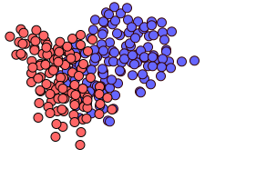</p> </section> <section data-auto-animate> <p>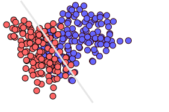</p> Ideas? <!-- .element: class="fragment" data-fragment-index="1" --> </section> <section data-auto-animate> <p>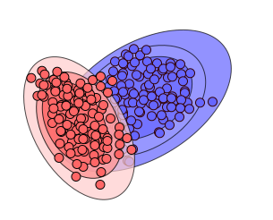</p> </section> <section data-auto-animate> <p>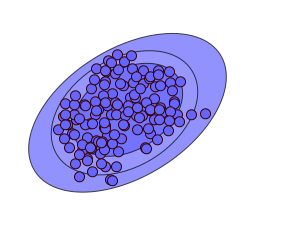</p> Examples of generative models? <!-- .element: class="fragment" data-fragment-index="1" --> <aside class="notes"> Back to the demo </aside> </section> <section> 1. What model should I use? - Classification problem -> classifier? - Do we have all the information to trace a boundary between the two classes? - Is the information we have <i>complete</i>? 2. Is the data safe to use? <!-- .element: class="fragment" data-fragment-index="1" --> - How, who, where the data is collected? <!-- .element: class="fragment" data-fragment-index="2" --> - Is the data biased, inaccurate, mislabeled, imbalanced, etc? <!-- .element: class="fragment" data-fragment-index="3" --> - Does the data contain private information? <!-- .element: class="fragment" data-fragment-index="4" --> - Is the data physically safe? <!-- .element: class="fragment" data-fragment-index="5" --> - Is the data obtained from trusted sources? <!-- .element: class="fragment" data-fragment-index="6" --> - Is the data stored safely? Is the data protected from unauthorized alteration? <!-- .element: class="fragment" data-fragment-index="7" --> - Does the data contain poison, backdoors, adversarial examples, etc? <!-- .element: class="fragment" data-fragment-index="8" --> </section> --- <!-- ============================================================ --> <!-- SECTION 3: AI REGULATIONS --> <!-- ============================================================ --> ## AI Regulations ### The EU AI Act --- ### Why Regulate AI? - AI is increasingly used in high-risk domains: healthcare, criminal justice, hiring, autonomous driving. <!-- .element: class="fragment" data-fragment-index="1" --> - Most AI systems are opaque: users cannot understand why a decision was made. <!-- .element: class="fragment" data-fragment-index="2" --> - AI operates across borders, but laws are national. <!-- .element: class="fragment" data-fragment-index="3" --> - Without regulation, the incentive is to move fast and break things. <!-- .element: class="fragment" data-fragment-index="4" --> Note: Self-driving cars are a perfect example: they cross borders, make life-or-death decisions, and use opaque deep learning models. --- ### The EU AI Act - First comprehensive AI law in the world. Entered into force **1 Aug 2024**. <!-- .element: class="fragment" data-fragment-index="1" --> - Risk-based approach: AI systems classified into four tiers. <!-- .element: class="fragment" data-fragment-index="2" --> - Phased rollout (application dates): <!-- .element: class="fragment" data-fragment-index="3" --> - **2 Feb 2025**: prohibited practices + AI literacy. <!-- .element: class="fragment" data-fragment-index="4" --> - **2 Aug 2025**: general-purpose AI (GPAI) model obligations. <!-- .element: class="fragment" data-fragment-index="5" --> - **2 Aug 2026**: most rules incl Annex III high-risk requirements. <!-- .element: class="fragment" data-fragment-index="6" --> - **2 Aug 2027**: some high-risk AI in regulated products. <!-- .element: class="fragment" data-fragment-index="7" --> [European Commission](https://commission.europa.eu/news-and-media/news/ai-act-enters-force-2024-08-01_en) · [Implementation timeline](https://ai-act-service-desk.ec.europa.eu/en/ai-act/eu-ai-act-implementation-timeline) · [EUR-Lex 2024/1689](https://eur-lex.europa.eu/eli/reg/2024/1689/oj/eng) <!-- .element: class="smaller" --> Note: Primary sources: European Commission announcement (entry into force), EUR-Lex legal text, and the EU AI Act Service Desk timeline/Annex III pages. --- ### EU AI Act -- Risk Pyramid <p></p> Self-driving cars = **HIGH RISK** (Annex III, critical infrastructure). <!-- .element: class="fragment" data-fragment-index="1" --> Note: Autonomous driving requires risk management systems, data governance, human oversight, and conformity assessment under the EU AI Act. --- ### EU AI Act -- Penalties | Violation | Max Fine | |---|---| | Prohibited AI practices | €35M or **7%** global turnover | | High-risk system violations | €15M or **3%** global turnover | | Incorrect information to authorities | €7.5M or **1%** global turnover | [EUR-Lex 2024/1689](https://eur-lex.europa.eu/eli/reg/2024/1689/oj/eng) <!-- .element: class="smaller" --> Note: These are the highest per-category, whichever is greater applies. --- ### Global Regulatory Landscape - **EU**: Risk-based regulation (EU AI Act). <!-- .element: class="fragment" data-fragment-index="1" --> - **US**: Executive orders + NIST frameworks (voluntary). <!-- .element: class="fragment" data-fragment-index="2" --> - **China**: Algorithm regulation + mandatory registration. <!-- .element: class="fragment" data-fragment-index="3" --> - Self-driving example: Waymo in London/UK (Europe) highlights fragmented approvals across jurisdictions (EU member states vs UK vs US). <!-- .element: class="fragment" data-fragment-index="4" --> [NIST AI 100-2 E2025](https://csrc.nist.gov/pubs/ai/100/2/e2025/final) · [Waymo in the UK](https://waymo.com/waymo-in-uk) <!-- .element: class="smaller" --> Note: The UK is not in the EU; “Europe” often implies multiple overlapping regimes (EU AI Act + member-state rules + UK-specific approvals). --- ### Checkpoint: Politics of regulation (3 min) <div class="callout poll"> <span class="tag">Poll</span><span class="time">30s</span> <p>Hands up: which is the <b>biggest</b> practical failure mode of AI regulation?</p> <ul class="mini"> <li>A) Rules are unclear</li> <li>B) Enforcement is weak</li> <li>C) Fines are too small vs profit</li> <li>D) Regulatory capture / lobbying</li> </ul> <p class="muted mini">Optional: run the same poll with any live tool; keep a hands-up fallback.</p> </div> <div class="callout activity" style="margin-top:0.6em"> <span class="tag">Think–Pair–Share</span><span class="time">90s</span> <p class="mini"><b>Prompt:</b> “If you were designing enforcement for high-risk AI in self-driving, what would you measure and audit?”</p> <ul class="mini"> <li>What evidence is easy to fake?</li> <li>What evidence is hard to fake?</li> </ul> </div> <div class="callout quiz" style="margin-top:0.6em"> <span class="tag">Quiz</span><span class="time">60s</span> <p class="mini"><b>Question:</b> Under the EU AI Act, which statement is most accurate?</p> <ul class="mini"> <li>1) It applies fully immediately after entry into force</li> <li>2) It has phased application dates (2025/2026/2027)</li> <li>3) It only applies to “AI companies”, not deployers</li> </ul> <p class="fragment mini"><b>Answer:</b> 2) phased rollout (see timeline slides).</p> </div> Note: Facilitation: 30s hands-up → 90s pair talk → 60s quiz reveal. Debrief: “Policy” is part of safety engineering: incentives + audits + measurable evidence. --- <!-- ============================================================ --> <!-- SECTION 3b: POLITICS OF AI REGULATION --> <!-- ============================================================ --> ## The Politics of AI Regulation ### Why Regulations Alone May Not Be Enough --- ### Fines as Cost of Doing Business - Big Tech paid **$8.2B** in fines in 2024. <!-- .element: class="fragment" data-fragment-index="1" --> - They could cover it in **under 3 weeks** of free cash flow: <!-- .element: class="fragment" data-fragment-index="2" --> - Amazon: $57M fine = **1 day** <!-- .element: class="fragment" data-fragment-index="3" --> - Meta: $1.46B = **10 days** <!-- .element: class="fragment" data-fragment-index="3" --> - Google: $2.97B = **17 days** <!-- .element: class="fragment" data-fragment-index="3" --> - If expected profit > sanction, rational actors will break the rules. <!-- .element: class="fragment" data-fragment-index="4" --> [Proton Big Tech Fines Tracker](https://proton.me/blog/big-tech-pays-fines-under-3-weeks) <!-- .element: class="smaller" --> --- ### Case Study: Clearview AI - Facial recognition company scraped **billions** of images from social media without consent. <!-- .element: class="fragment" data-fragment-index="1" --> - Received **$100M+** in EU GDPR fines (Netherlands €30.5M, France, Greece, Italy, UK). <!-- .element: class="fragment" data-fragment-index="2" --> - Reports indicate Clearview disputed the decisions and enforcement across borders remains difficult. <!-- .element: class="fragment" data-fragment-index="3" --> - Criminal complaint filed only in October 2025. <!-- .element: class="fragment" data-fragment-index="4" --> [Dutch DPA](https://www.autoriteitpersoonsgegevens.nl/en/current/dutch-dpa-imposes-a-fine-on-clearview-because-of-illegal-data-collection-for-facial-recognition) · [Noyb](https://noyb.eu/en/criminal-complaint-against-facial-recognition-company-clearview-ai) · [The Register](https://www.theregister.com/2025/10/28/noyb_criminal_charges_clearview) <!-- .element: class="smaller" --> --- ### Big Tech Lobbying on AI Rules - Meta: **$6.5M** lobbying spend in Q4 2025 alone. <!-- .element: class="fragment" data-fragment-index="1" --> - Google and Microsoft lobbied to **remove** "large-scale illegal discrimination" from EU AI Act systemic risks. <!-- .element: class="fragment" data-fragment-index="2" --> - Code of Practice contractor (Wavestone) has commercial ties with Microsoft. <!-- .element: class="fragment" data-fragment-index="3" --> - Civil society groups (e.g. Reporters Without Borders) **withdrew** due to Big Tech's overwhelming influence. <!-- .element: class="fragment" data-fragment-index="4" --> [Corporate Europe Observatory](https://corporateeurope.org/en/2025/04/eu-under-heavy-big-tech-pressure-weaken-rules-advanced-ai) · [Axios](https://www.axios.com/2026/01/21/meta-big-tech-lobbying-spending-q4) <!-- .element: class="smaller" --> Note: Axios cites official US lobbying disclosures (quarterly). CEO provides EU-side reporting on lobbying pressure during AI Act / Code of Practice discussions. --- ### The Revolving Door - **36+** people moved from UK tech regulators/government to Big Tech firms. <!-- .element: class="fragment" data-fragment-index="1" --> - Former FCC Chair Ajit Pai → CEO of CTIA (top wireless lobbying org). <!-- .element: class="fragment" data-fragment-index="2" --> - Companies with ex-regulators are more likely to receive government contracts within 2 years. <!-- .element: class="fragment" data-fragment-index="3" --> [Tortoise Media](https://www.tortoisemedia.com/2025/04/03/public-officials-joining-tech-firms-raise-fears-of-unregulated-revolving-door) <!-- .element: class="smaller" --> --- ### Regulations Crush Small Players - Fixed compliance costs hit startups harder than incumbents (legal, audits, documentation). <!-- .element: class="fragment" data-fragment-index="1" --> - Harvard Kennedy School analysis: a 200% increase in fixed compliance costs can swing an AI startup margin from +13% to **-7%**. <!-- .element: class="fragment" data-fragment-index="2" --> - Patchwork: **1,000+** AI-related bills introduced in US states in 2025 alone. <!-- .element: class="fragment" data-fragment-index="3" --> - Self-driving example: safety cases + data governance can be existential for an ADS startup. <!-- .element: class="fragment" data-fragment-index="4" --> [HKS Student Policy Review](https://studentreview.hks.harvard.edu/why-compliance-costs-of-ai-commercialization-maybe-holding-start-ups-back/) · [Lawfare](http://www.lawfareblog.com/article/1-000-ai-bills--time-for-congress-to-get-serious-about-preemption) · [Cato](https://www.cato.org/commentary/ai-privacy-rules-meant-big-tech-could-hurt-small-businesses-most) <!-- .element: class="smaller" --> --- ### Case Study: Cruise Cover-Up - Oct 2023: Cruise robotaxi struck and **dragged a pedestrian 20 feet** in San Francisco. <!-- .element: class="fragment" data-fragment-index="1" --> - Company deliberately **withheld the dragging video** from NHTSA. <!-- .element: class="fragment" data-fragment-index="2" --> - Result: $500K criminal penalty, $1.5M NHTSA fine, CEO resigned, operations suspended. <!-- .element: class="fragment" data-fragment-index="3" --> - Total fines **< $2.5M** vs. billions in valuation. Is that a deterrent? <!-- .element: class="fragment" data-fragment-index="4" --> [SFGate](https://www.sfgate.com/tech/article/cruise-fine-criminal-cover-up-19920343.php), [Reuters](https://www.reuters.com/business/autos-transportation/how-gms-cruise-robotaxi-tech-failures-led-it-drag-pedestrian-20-feet-2024-01-26/) <!-- .element: class="smaller" --> --- ### Copyright as Calculated Risk - Anthropic: **$1.5B** settlement for training on pirated books (~$3K/book). <!-- .element: class="fragment" data-fragment-index="1" --> - OpenAI and Meta face similar lawsuits -- all knowingly used "shadow libraries" (LibGen, etc.). <!-- .element: class="fragment" data-fragment-index="2" --> - The economics: train on stolen data first, settle later, **still profitable**. <!-- .element: class="fragment" data-fragment-index="3" --> [Bloomberg Law](https://news.bloomberglaw.com/class-action/record-1-5-billion-ai-copyright-pact-sets-bar-for-openai-meta) <!-- .element: class="smaller" --> --- ### Checkpoint: Regulation → Engineering reality (3 min) <div class="callout activity"> <span class="tag">Think–Pair–Share</span><span class="time">90s</span> <p class="mini"><b>Prompt:</b> “Fines are not always enforcement.” In self-driving, what <b>non-monetary</b> levers change behavior?</p> <ul class="mini"> <li>type-approval / certification gates</li> <li>mandatory incident reporting + audits</li> <li>recall powers / operating license suspension</li> </ul> </div> <div class="callout quiz" style="margin-top:0.6em"> <span class="tag">Quiz</span><span class="time">60s</span> <p class="mini"><b>Question:</b> A company can “ignore” fines if enforcement can’t reach them. What’s the general fix?</p> <ul class="mini"> <li>A) Bigger fines only</li> <li>B) Cross-border enforcement + market-access controls</li> <li>C) Voluntary guidelines</li> </ul> <p class="fragment mini"><b>Answer:</b> B) market access + enforceable controls (plus audits/recalls).</p> </div> Note: Keep it short and energetic before entering the Bias section. Tie back to “safety cases” and evidence. --- <!-- ============================================================ --> <!-- SECTION 4: DATA SAFETY - BIAS --> <!-- ============================================================ --> ## Data Safety - Bias --- ### Biases in the real world <div class="callout activity"> <span class="tag">Case</span><span class="time">60s</span> <p class="mini"><b>Healthcare bias case:</b> a model predicts “needs extra care”.</p> <ul class="mini"> <li>Label used: past healthcare spending (easy to measure)</li> <li>Hidden problem: spending ≠ need (access & inequality distort the proxy)</li> </ul> <p class="muted mini">Hint: think about how US healthcare works.</p> </div> --- ### Biases in the real world <div class="callout activity"> <span class="tag">Case</span><span class="time">60s</span> <p class="mini"><b>Hiring bias case:</b> a resume screener trained on historical hiring decisions.</p> <ul class="mini"> <li>The model learns “what worked before”</li> <li>If history is biased, the model can automate the bias</li> </ul> <p class="muted mini">Hint: think about representation inside tech jobs.</p> </div> --- ### Biases in the real world <div class="callout quiz"> <span class="tag">Quick check</span><span class="time">45s</span> <p class="mini"><b>Where does bias usually enter first?</b></p> <ul class="mini"> <li>A) The loss function</li> <li>B) The data collection + labeling pipeline</li> <li>C) The GPU hardware</li> </ul> <p class="fragment mini"><b>Answer:</b> B (then it propagates everywhere).</p> </div> What is the worst thing they could have said? <blockquote class="fragment custom blur">Government departments have been reluctant to disclose details about their use of AI, citing concerns that disclosure could allow bad actors to manipulate systems.</blockquote> Note: Discussion: “security through obscurity” rarely works alone — you need threat modeling, monitoring, and robust controls. --- ### Bias in Self-Driving Cars - Pedestrian detectors are **28-31% less likely** to detect darker-skinned people. <!-- .element: class="fragment" data-fragment-index="1" --> - Detection accuracy for adults is **19.62% higher** than for children. <!-- .element: class="fragment" data-fragment-index="2" --> - Bias **worsens at night**: undetected dark-skinned pedestrians rise from 7.14% (day) to 9.86% (night). <!-- .element: class="fragment" data-fragment-index="3" --> - Root cause: imbalanced training data. <!-- .element: class="fragment" data-fragment-index="4" --> [King's College London](https://www.kcl.ac.uk/news/driverless-cars-worse-at-detecting-children-and-darker-skinned-pedestrians-say-scientists) <!-- .element: class="smaller" --> --- ## Well, can we fix this right? ### How? <!-- .element: class="fragment" data-fragment-index="1" --> --- ### First of all we need to detect the problem! - How did we test the model? <!-- .element: class="fragment" data-fragment-index="1" --> - Were train/validation/test sets collected from the same distribution of data? <!-- .element: class="fragment" data-fragment-index="2" --> - What metrics did we use to evaluate the performance? <!-- .element: class="fragment" data-fragment-index="3" --> - What do we mean by performance? <!-- .element: class="fragment" data-fragment-index="4" --> Note: Example of bad calibrated cameras in self-driving cars. --- ### But if we remove all gender, ethnicity, or unwanted information from the data? - The AI system can infer them from remaining information! <!-- .element: class="fragment" data-fragment-index="1" --> - Gender from height/weight ratio. <!-- .element: class="fragment" data-fragment-index="2" --> - Ethnicity from specific disorders. <!-- .element: class="fragment" data-fragment-index="3" --> - Level of wealth from geographical information. <!-- .element: class="fragment" data-fragment-index="4" --> - ... <!-- .element: class="fragment" data-fragment-index="5" --> Note: Beware of correlation between data and over representation! A dataset for type 2 diabetes is mainly composed of overweight people Models are LAZY --- ### But are models really that powerful? #### Spoiler: yes <!-- .element: class="fragment" data-fragment-index="1" --> --- ### Let's make a test Tell me a random integer between 1 and 10. <!-- .element: class="fragment" data-fragment-index="1" --> How should the distribution of answers look like? <!-- .element: class="fragment" data-fragment-index="2" --> --- <div class="callout poll"> <span class="tag">Warm-up poll</span><span class="time">30s</span> <p class="mini">Hands up: who picked <b>7</b> or <b>3</b>?</p> <p class="muted mini">Humans are not uniform RNGs; we have biases.</p> </div> --- ### Now let's ask ChatGPT <div class="callout quiz"> <span class="tag">Prediction</span><span class="time">45s</span> <p class="mini">Will an LLM produce a <b>uniform</b> distribution when asked for random integers?</p> <ul class="mini"> <li>A) Yes, it samples randomly by default</li> <li>B) No, it imitates human-like patterns</li> <li>C) It depends on decoding settings / temperature</li> </ul> <p class="fragment mini"><b>Answer:</b> Usually B/C — it often mirrors patterns; decoding matters.</p> </div> What if we ask ChatGPT that question many times? <!-- .element: class="fragment smaller" data-fragment-index="3" --> --- <div class="callout takeaway"> <span class="tag">Takeaway</span> <p class="mini">LLMs often produce “random-looking” text that is <b>statistically structured</b>—which matters for security, sampling, and evaluation.</p> <p class="muted mini">See the paper on LLM sampling below.</p> </div> [Can LLMs Generate Random Numbers? Evaluating LLM Sampling in Controlled Domains](https://openreview.net/forum?id=Vhh1K9LjVI) <!-- .element: class="fragment smaller fade-out" data-fragment-index="1" --> --- ### And even more covertly <div class="callout activity"> <span class="tag">Class discussion</span><span class="time">60s</span> <p class="mini"><b>Question:</b> If a model infers dialect, what else can it infer (region, wealth, ethnicity)?</p> <p class="muted mini">This is why “removing sensitive attributes” often fails: proxies remain.</p> </div> [Dialect prejudice predicts AI decisions about people's character, employability, and criminality](https://arxiv.org/abs/2403.00742) <!-- .element: class="smaller" --> --- ### The main enemy: bias > <!-- .element: class="fragment" data-fragment-index="1" --> "the action of supporting or opposing a particular person or thing in an unfair way, because of allowing personal opinions to influence your judgment." - Bias is not always unwanted: <!-- .element: class="fragment" data-fragment-index="2" --> - Used to perceive possible dangers by almost all animals. <!-- .element: class="fragment" data-fragment-index="3" --> - Pareidolia. <!-- .element: class="fragment" data-fragment-index="4" --> - Basis of Bayesian Statistics (degree of belief). <!-- .element: class="fragment" data-fragment-index="5" --> - Bias may be essential to ML and humans for decision making. <!-- .element: class="fragment" data-fragment-index="6" --> Note: Example of noise from bush, stick vs snake. If we were totally bias free, we would not take decision at all! We must evaluate all possible possibilities (even the most remote ones) --- ### (Bad) Biases are in everyday life! <div class="two-c-container" data-markdown> <div class="two-c-col-l"> - Beauty bias <!-- .element: class="fragment" data-fragment-index="1" --> - Halo/Horns effect <!-- .element: class="fragment" data-fragment-index="2" --> - Conformity bias <!-- .element: class="fragment" data-fragment-index="3" --> - Status quo bias <!-- .element: class="fragment" data-fragment-index="4" --> - Authority bias <!-- .element: class="fragment" data-fragment-index="5" --> - Idiosyncratic bias <!-- .element: class="fragment" data-fragment-index="6" --> - ... <!-- .element: class="fragment" data-fragment-index="7" --> </div> <div class="two-c-col-r" data-markdown> <div class="callout activity fragment" data-fragment-index="8"> <span class="tag">Mini exercise</span><span class="time">45s</span> <p class="mini"><b>Pick one</b> everyday bias you’ve seen at university/work.</p> <ul class="mini"> <li>What signal was used as a shortcut?</li> <li>What was the cost of the shortcut?</li> </ul> </div> </div> </div> Note: Idiosyncratic bias: occurs when managers evaluate skills they're not good at highly. Conversely, they rate others lower for skills they're great at. --- ### (Bad) Biases are in everyday life! <div class="callout poll"> <span class="tag">Poll</span><span class="time">30s</span> <p class="mini">In ML systems, which proxy risk is most common?</p> <ul class="mini"> <li>A) <b>Historical data</b> encodes old decisions</li> <li>B) <b>Measurement</b> is easier than the true target</li> <li>C) <b>Convenience</b> features leak sensitive attributes</li> </ul> </div> <p class="fragment muted mini">Takeaway: models often learn the easiest proxy correlated with the label.</p> --- ### Fairness Metrics - **Group Fairness**: equal outcomes across demographic groups. <!-- .element: class="fragment" data-fragment-index="1" --> - **Individual Fairness**: similar individuals get similar outcomes. <!-- .element: class="fragment" data-fragment-index="2" --> - **Counterfactual Fairness**: outcome unchanged if sensitive attribute were different. <!-- .element: class="fragment" data-fragment-index="3" --> - Problem: these definitions can be **mathematically incompatible**! <!-- .element: class="fragment" data-fragment-index="4" --> - Self-driving: should a pedestrian detector optimize for equal detection rates across skin tones, or equal error rates? <!-- .element: class="fragment" data-fragment-index="5" --> --- <!-- .slide: data-auto-animate --> ### How to deal with bias - <!-- .element: class="fragment" data-fragment-index="1" --> <a href="https://www.forbes.com/councils/forbestechcouncil/2025/03/13/the-impossible-dream-why-bias-free-ai-is-a-myth">The Impossible Dream: Why Bias-Free AI Is A Myth</a> - Just thinking of and documenting the possible biases that AI models may have is a great step forward (we will discuss this later). <!-- .element: class="fragment" data-fragment-index="2" --> - Concretely: <!-- .element: class="fragment" data-fragment-index="3" --> --- <!-- .slide: data-auto-animate data-transition="slide-in fade-out" --> ### How to deal with bias - Concretely: - Labeled data: <!-- .element: class="fragment" data-fragment-index="1" --> - Balance unbalanced datasets. <!-- .element: class="fragment" data-fragment-index="2" --> - Remove data that contribute (most) to the bias. <!-- .element: class="fragment" data-fragment-index="3" --> [Improving Subgroup Robustness via Data Selection](https://proceedings.neurips.cc/paper_files/paper/2024/hash/abbbb25cddb2c2cd08714e6bfa2f0634-Abstract-Conference.html) <!-- .element: class="fragment smaller" data-fragment-index="3" --> - Unlabeled data: <!-- .element: class="fragment" data-fragment-index="4" --> - Adversarial debiasing. <!-- .element: class="fragment" data-fragment-index="5" --> [Mitigating Unwanted Biases with Adversarial Learning](https://dl.acm.org/doi/10.1145/3278721.3278779) <!-- .element: class="fragment smaller" data-fragment-index="5" --> - Computing attention to detect biases. <!-- .element: class="fragment" data-fragment-index="6" --> [Visualizing and Understanding Convolutional Networks](https://link.springer.com/chapter/10.1007/978-3-319-10590-1_53) <!-- .element: class="fragment smaller" data-fragment-index="6" --> - And semi-supervised learning / pseudo-labels? <!-- .element: class="fragment" data-fragment-index="7" --> --- ### Checkpoint: Bias (3 min) <div class="callout poll"> <span class="tag">Poll</span><span class="time">30s</span> <p class="mini">If you must pick one for self-driving perception, what do you prioritize?</p> <ul class="mini"> <li>A) maximize average accuracy</li> <li>B) minimize worst-case errors (tail risk)</li> <li>C) equalize error rates across groups</li> </ul> </div> <div class="callout activity" style="margin-top:0.6em"> <span class="tag">Pair exercise</span><span class="time">90s</span> <p class="mini"><b>Design a mitigation:</b> pick one bias source (data, labels, sensors) and propose a concrete fix.</p> <p class="muted mini">Share 1 idea with the room.</p> </div> Note: Debrief: bias isn’t “ethics-only” — it’s a measurable safety issue (missed detections, night conditions, subgroups). --- <!-- ============================================================ --> <!-- SECTION 5: DATA SAFETY - ATTACKS --> <!-- ============================================================ --> ## Data Safety - Attacks --- ### Attack Taxonomy (NIST AI 100-2) <p></p> [NIST AI 100-2 E2025](https://csrc.nist.gov/pubs/ai/100/2/e2025/final) <!-- .element: class="smaller" --> Note: Three main categories: Evasion (inference-time), Poisoning (training-time), Privacy (post-deployment). Published March 2025. --- ### Threat Modeling for AI Systems (1/3) **What are we protecting?** - **Safety**: prevent harm (collisions, near-misses, unsafe actions) <!-- .element: class="fragment" data-fragment-index="1" --> - **Integrity**: correct outputs, no malicious manipulation <!-- .element: class="fragment" data-fragment-index="2" --> - **Availability**: the system works when needed (DoS, outages) <!-- .element: class="fragment" data-fragment-index="3" --> - **Privacy**: training data, user data, telemetry <!-- .element: class="fragment" data-fragment-index="4" --> - **IP**: weights, prompts, datasets, evaluation artifacts <!-- .element: class="fragment" data-fragment-index="5" --> Note: Threat modeling is the bridge between “cool attack papers” and real safety engineering. Suggested starting points: NIST AI RMF 1.0 + NIST AI 100-2 taxonomy. --- ### Threat Modeling (2/3): Attacker Capabilities - **Black-box**: only query access (API) or sensor exposure (physical world) <!-- .element: class="fragment" data-fragment-index="1" --> - **Gray-box**: partial knowledge (architecture hints, logs, training details) <!-- .element: class="fragment" data-fragment-index="2" --> - **White-box**: full access (weights, gradients, training pipeline) <!-- .element: class="fragment" data-fragment-index="3" --> - Access positions: **data supplier**, **model provider**, **operator**, **end user**, **bystander** <!-- .element: class="fragment" data-fragment-index="4" --> --- ### Threat Modeling (3/3): Attack Surfaces - **Data pipeline**: collection, labeling, storage, ingestion <!-- .element: class="fragment" data-fragment-index="1" --> - **Training**: poisoning, backdoors, hyperparameter sabotage <!-- .element: class="fragment" data-fragment-index="2" --> - **Model artifacts**: malicious weights / unsafe deserialization <!-- .element: class="fragment" data-fragment-index="3" --> - **Deployment**: monitoring gaps, unsafe integrations, prompt injection in copilots <!-- .element: class="fragment" data-fragment-index="4" --> - **Humans & process**: social engineering, policy gaps, “automation bias” <!-- .element: class="fragment" data-fragment-index="5" --> --- ### Self-Driving Stack (Simplified) 1. **Perception**: detect lanes, vehicles, pedestrians, signs 2. **Prediction**: forecast other agents’ motion 3. **Planning**: choose safe trajectories and maneuvers 4. **Control**: execute steering / braking / throttle --- ### Where Attacks Land (Self-Driving) - Evasion (patches) → **Perception** <!-- .element: class="fragment" data-fragment-index="1" --> - Sensor spoofing (LiDAR/GPS) → **Perception + Localization** <!-- .element: class="fragment" data-fragment-index="2" --> - Poisoning/backdoors → **Training-time** (affects all downstream tasks) <!-- .element: class="fragment" data-fragment-index="3" --> - Prompt injection (LLM copilots) → **Operations / Planning** <!-- .element: class="fragment" data-fragment-index="4" --> --- ### Safety Impacts: 3 Common Failure Patterns - **False negative**: miss a pedestrian or stop sign <!-- .element: class="fragment" data-fragment-index="1" --> - **False positive**: phantom obstacle → hard braking / unnecessary evasive maneuvers <!-- .element: class="fragment" data-fragment-index="2" --> - **Drift**: slow localization error accumulation → wrong lane/route over time <!-- .element: class="fragment" data-fragment-index="3" --> --- ### Attacks on data - Even if data is formally correct, it can be attacked by (malicious) third parties in different ways: - Adversarial attacks (real-world or hidden) <!-- .element: class="fragment" data-fragment-index="1" --> - Poisoning <!-- .element: class="fragment" data-fragment-index="2" --> - Backdoor insertion <!-- .element: class="fragment" data-fragment-index="3" --> - Mislabeling <!-- .element: class="fragment" data-fragment-index="4" --> - Supply chain attacks <!-- .element: class="fragment" data-fragment-index="5" --> - ... <!-- .element: class="fragment" data-fragment-index="6" --> - Common goal: making the resulting model unusable, weak, attackable or exploitable. <!-- .element: class="fragment" data-fragment-index="7" --> --- ### Adversarial examples - real world <div class="callout activity"> <span class="tag">Quick activity</span><span class="time">60s</span> <p class="mini"><b>Physical-world attacks:</b> imagine a stop sign with stickers/patches.</p> <ul class="mini"> <li>What does a human do?</li> <li>What does a vision model do?</li> <li>What is the safety impact: false negative or false positive?</li> </ul> </div> [Robust Physical-World Attacks on Deep Learning Visual Classification](https://ieeexplore.ieee.org/document/8578273) <!-- .element: class="smaller" --> --- ### Adversarial examples - real world <img src="./img_new/yolo_patch.svg" height="240"> [Robust Physical-World Attacks on Deep Learning Visual Classification](https://ieeexplore.ieee.org/document/8578273) <!-- .element: class="smaller" --> --- ### Adversarial Patches on Stop Signs (2025) - **$1** color-printed stickers → **100%** attack success in lab, **>84%** on video from moving vehicles. <!-- .element: class="fragment" data-fragment-index="1" --> - Stop signs misclassified as "Speed Limit 45". <!-- .element: class="fragment" data-fragment-index="2" --> - Universal adversarial stickers work across multiple signs without modification. <!-- .element: class="fragment" data-fragment-index="3" --> - Self-driving: **human drivers** easily read defaced signs. **AI cannot**. <!-- .element: class="fragment" data-fragment-index="4" --> [Eykholt et al.](https://iotsecurity.engin.umich.edu/robust-physical-world-attacks-on-deep-learning-visual-classification/), [Universal Stickers 2025](https://arxiv.org/html/2502.18724v1) <!-- .element: class="smaller" --> --- ### Adversarial examples - real world <div class="callout activity"> <span class="tag">Physical evasion</span><span class="time">45s</span> <p class="mini"><b>Adversarial clothing:</b> patterns can reduce person-detection confidence.</p> <p class="muted mini">Self-driving: pedestrians/cyclists → perception safety risk.</p> </div> [Adversarial T-Shirt! Evading Person Detectors in a Physical World](https://link.springer.com/chapter/10.1007/978-3-030-58558-7_39) <!-- .element: class="smaller" --> --- ### Adversarial examples - hidden <div class="callout quiz"> <span class="tag">Hidden attack</span><span class="time">45s</span> <p class="mini">Why do “imperceptible” attacks exist?</p> <ul class="mini"> <li>A) Networks are linear-ish in high dimension</li> <li>B) Humans and models use different features</li> <li>C) Both</li> </ul> <p class="fragment mini"><b>Answer:</b> C.</p> </div> [Obfuscated Gradients Give a False Sense of Security](https://proceedings.mlr.press/v80/athalye18a/athalye18a.pdf) <!-- .element: class="smaller" --> --- ### How Adversarial Examples Work: FGSM $$ adv\_x = x + \epsilon \cdot \text{sign}(\nabla_x J(\theta, x, y)) $$ <img src="./img_new/fgsm_diagram.svg" height="300"> Key insight: perturbation is **imperceptible** to humans but **catastrophic** for networks. <!-- .element: class="fragment" data-fragment-index="1" --> [Goodfellow et al. 2015](https://arxiv.org/abs/1412.6572) <!-- .element: class="smaller" --> Note: Demo link: demo_new/demo_fgsm_adversarial.ipynb --- ### Adversarial Patches on YOLO (2025) - AdvReal framework: **70%** average, **>90%** multi-angle attack success against YOLOv12 at 4m. <!-- .element: class="fragment" data-fragment-index="1" --> - Smaller YOLO models (edge AI / self-driving) are **more vulnerable** than larger ones. <!-- .element: class="fragment" data-fragment-index="2" --> - Directly applicable to real-time object detection in autonomous vehicles. <!-- .element: class="fragment" data-fragment-index="3" --> <img class="fragment" data-fragment-index="4" src="./img_new/yolo_patch.svg" height="210"> [AdvReal 2025](https://arxiv.org/abs/2505.16402), [Springer 2025](https://link.springer.com/article/10.1007/s10207-025-01067-3) <!-- .element: class="smaller" --> --- <div class="callout activity"> <span class="tag">Discussion</span><span class="time">45s</span> <p class="mini"><b>Same attack idea, different domain:</b> in medical imaging, attackers can perturb inputs or the data pipeline.</p> <p class="muted mini">Prompt: what is the “input pipeline” analog in self-driving (sensor ingest, calibration, preprocessing)?</p> </div> [Impact of Adversarial Examples on Deep Learning Models for Biomedical Image Segmentation](https://link.springer.com/chapter/10.1007/978-3-030-32245-8_34) <!-- .element: class="smaller" --> Note: Think about controlling the input pipeline of images (attack on the hospital system). --- ### LiDAR Spoofing (Self-Driving) - **D-SLAMSpoof**: inject fake point clouds → position errors **≥ 4.2m** (exceeds lane width). <!-- .element: class="fragment" data-fragment-index="1" --> - Works in feature-rich environments (urban areas). <!-- .element: class="fragment" data-fragment-index="2" --> - **Shadow Hack**: mirror sheets near roads → **100%** attack success at 10m against PointPillars. <!-- .element: class="fragment" data-fragment-index="3" --> - Physical-world attack requiring **no digital access**. <!-- .element: class="fragment" data-fragment-index="4" --> <p></p> [D-SLAMSpoof](https://arxiv.org/abs/2603.11365v1), [USENIX Security 2025](https://www.usenix.org/system/files/usenixsecurity25-kobayashi.pdf) <!-- .element: class="smaller" --> --- ### GPS Spoofing on ADS - **Slow-drift attacks**: gradually deviate vehicles from correct route while remaining undetectable. <!-- .element: class="fragment" data-fragment-index="1" --> - Exploits vehicle dynamics during acceleration and cruising. <!-- .element: class="fragment" data-fragment-index="2" --> - Defense: GPS-IDS using physics-based models + ML anomaly detection. <!-- .element: class="fragment" data-fragment-index="3" --> [GPS-IDS](https://arxiv.org/html/2405.08359v2), [Slow Drift Spoofing](https://arxiv.org/abs/2401.01394) <!-- .element: class="smaller" --> --- ### Data Poisoning - The data used to train the model is slowly poisoned with biases, false information, new data that skew the model decisions, etc. - Particularly effective on large models: <!-- .element: class="fragment" data-fragment-index="1" --> - They are often (always) trained continually using online data. <!-- .element: class="fragment" data-fragment-index="2" --> - Changing online data (e.g. wikipedia articles) or inserting new poisoned data online (e.g. on social media) is easier than altering "classical" training DBs. <!-- .element: class="fragment" data-fragment-index="3" --> - Once biases/false information are inserted in a version of the model, it is extremely difficult to detect and remove them. <!-- .element: class="fragment" data-fragment-index="4" --> - Data poisoning can be untargeted (poison all models) or targeted (e.g. a company wants to poison the rival company's models). <!-- .element: class="fragment" data-fragment-index="5" --> --- ### Data Poisoning: How It Works - **Label-flipping**: change 40% of "car" labels to "pedestrian" → model confuses cars for pedestrians. <!-- .element: class="fragment" data-fragment-index="1" --> - **Clean-label**: only **~50** poisoned images needed for transfer learning attacks. <!-- .element: class="fragment" data-fragment-index="2" --> - Global accuracy stays high → hard to detect. <!-- .element: class="fragment" data-fragment-index="3" --> <p></p> [MarkTechPost: Label Flipping on CIFAR-10](https://www.marktechpost.com/2026/01/11/a-coding-guide-to-demonstrate-targeted-data-poisoning-attacks-in-deep-learning-by-label-flipping-on-cifar-10-with-pytorch/) <!-- .element: class="smaller" --> --- ### Data Poisoning: Problems - A huge amount of data is required to poison a model. <!-- .element: class="fragment" data-fragment-index="1" --> - Even if poisoned data is spread online, it is not certain that the poisoned data is used to train the target model. <!-- .element: class="fragment" data-fragment-index="2" --> - False or poisoned data can be recognized by humans/filters and deleted or discarded during data collection. <!-- .element: class="fragment" data-fragment-index="3" --> <br/> <br/> #### Solution (for image generation): Nightshade <!-- .element: class="fragment" data-fragment-index="4" --> --- <!-- .slide: class="text-xs" --> ### Nightshade - Developed to defend artists copyright against genAI models. - Strengths: <!-- .element: class="fragment" data-fragment-index="1" --> - Few images needed to poison even a large model. <!-- .element: class="fragment" data-fragment-index="2" --> - Poisoned images are indistinguishable from real images. <!-- .element: class="fragment" data-fragment-index="3" --> <br/> <br/> #### How it works: <!-- .element: class="fragment" data-fragment-index="4" --> - Take a target image $x_t$ that you want to poison (e.g. dog) and use the target model to generate an anchor image $x^a$ (e.g. cat). <!-- .element: class="fragment" data-fragment-index="5" --> - Use even a different feature extractor $F$ to minimize the following loss: <!-- .element: class="fragment" data-fragment-index="6" --> $$ \min_\delta \text{Dist}(F(x_t + \delta), F(x^a)),\ \text{subject to} \ \delta < p $$ - $x_t$ is now poisoned with $x^a$ features, and since $x^a$ was generated by the target model, the poisoned image has the maximum possible destructive power during the model training. <!-- .element: class="fragment" data-fragment-index="7" --> --- ### Nightshade (engagement) <div class="callout quiz"> <span class="tag">Quiz</span><span class="time">45s</span> <p class="mini">Nightshade is mostly…</p> <ul class="mini"> <li>A) a defense tool for artists</li> <li>B) also a real poisoning technique to study attacker capabilities</li> <li>C) both</li> </ul> <p class="fragment mini"><b>Answer:</b> C.</p> </div> <p class="muted mini">Reference: University of Chicago Nightshade project + paper (see Appendix).</p> Note: Works also on nearby concepts: poisoning can “bleed” through the representation space. --- ### Backdoor Insertion - The training data is altered in order to insert a backdoor in the model. <!-- .element: class="fragment" data-fragment-index="1" --> - Once the backdoor is inserted, it can be exploited to control the output of the model. <!-- .element: class="fragment" data-fragment-index="2" --> - The model works normally if regular data is used. <!-- .element: class="fragment" data-fragment-index="3" --> <br/> <br/> [Demo!](https://colab.research.google.com/drive/1co74MX84NLvBlu-X79GsyvSk7sMEJg2D?usp=sharing) <!-- .element: class="fragment" data-fragment-index="4" --> --- ### Backdoor Attacks on 3D Point Clouds - Self-driving specific: PointBA achieves **>95%** attack success through LiDAR training data poisoning. <!-- .element: class="fragment" data-fragment-index="1" --> - Attacker inserts trigger pattern into point cloud → at inference, any object with trigger is **ignored**. <!-- .element: class="fragment" data-fragment-index="2" --> - Imagine a car that becomes **invisible** to other ADS. <!-- .element: class="fragment" data-fragment-index="3" --> [PointBA](https://arxiv.org/pdf/2103.16074) <!-- .element: class="smaller" --> --- ### Hidden Trigger Backdoor Attacks - Poisoned training data looks **completely normal** (correct labels, clean images). <!-- .element: class="fragment" data-fragment-index="1" --> - Trigger is hidden and only deployed at inference time. <!-- .element: class="fragment" data-fragment-index="2" --> - LOTUS: sample-specific triggers evade **13 different** detection methods. <!-- .element: class="fragment" data-fragment-index="3" --> [Hidden Trigger Backdoors](https://arxiv.org/pdf/1910.00033), [LOTUS](https://arxiv.org/pdf/2403.17188) <!-- .element: class="smaller" --> --- ### Poisoning and Backdoors in Federated Learning <div class="callout activity"> <span class="tag">Think</span><span class="time">45s</span> <p class="mini"><b>Federated learning mental model:</b> many clients send gradient/model updates → server aggregates.</p> <p class="muted mini">Question: where could an attacker inject a backdoor (client update, aggregation, or evaluation gate)?</p> </div> [How To Backdoor Federated Learning](https://proceedings.mlr.press/v108/bagdasaryan20a.html) <!-- .element: class="fragment smaller" data-fragment-index="1" --> --- ### ML Supply Chain Attacks - Malicious models on **Hugging Face** exploiting pickle deserialization. <!-- .element: class="fragment" data-fragment-index="1" --> - **PickleRAT** campaign: cryptojacking on GPU instances ($12K+/month). <!-- .element: class="fragment" data-fragment-index="2" --> - **CVE-2025-46417**: exfiltrate data via DNS at model load time. <!-- .element: class="fragment" data-fragment-index="3" --> - Defense: **Safetensors** format, Picklescan, sandboxing. <!-- .element: class="fragment" data-fragment-index="4" --> - Self-driving: imagine downloading a pretrained perception backbone that contains a backdoor. <!-- .element: class="fragment" data-fragment-index="5" --> [ReversingLabs](https://reversinglabs.com/blog/rl-identifies-malware-ml-model-hosted-on-hugging-face) <!-- .element: class="smaller" --> --- ### Gradient Leakage in Federated Learning - Reconstructing training images from shared gradients. <!-- .element: class="fragment" data-fragment-index="1" --> - **FedLeak** (2025): high-fidelity reconstruction even in realistic settings. <!-- .element: class="fragment" data-fragment-index="2" --> - **R-CONV++**: reconstruct images from <5% of convolutional layer constraints. <!-- .element: class="fragment" data-fragment-index="3" --> - Diffusion-model-based attacks **bypass noise defenses**. <!-- .element: class="fragment" data-fragment-index="4" --> - Self-driving: fleet learning leaking private driving data (locations, passengers). <!-- .element: class="fragment" data-fragment-index="5" --> [FedLeak 2025](https://arxiv.org/abs/2506.08435) <!-- .element: class="smaller" --> --- <!-- .slide: data-transition="slide-in fade-out" --> ### Reflections on Trusting Trust - Think about an AI model that generates code. <!-- .element: class="fragment" data-fragment-index="1" --> - What if this model is poisoned or contains a backdoor, and it outputs malicious code if some special input is provided? <!-- .element: class="fragment" data-fragment-index="2" --> - <!-- .element: class="fragment" data-fragment-index="3" --> What if that input is <i>"give me the code to build another AI that generates programming code"</i>? - <!-- .element: class="fragment" data-fragment-index="4" --> Trojan horses hidden <b>only</b> in the <s>compiled code</s> model parameters? --- ### Checkpoint: Data attacks (3 min) <div class="callout quiz"> <span class="tag">Quiz</span><span class="time">60s</span> <p class="mini"><b>Question:</b> Why are clean-label / backdoor attacks hard to catch?</p> <ul class="mini"> <li>A) They tank overall accuracy</li> <li>B) They keep accuracy high, but fail on specific triggers</li> <li>C) They only work in white-box settings</li> </ul> <p class="fragment mini"><b>Answer:</b> B) accuracy stays high; failures are conditional.</p> </div> <div class="callout activity" style="margin-top:0.6em"> <span class="tag">Pair exercise</span><span class="time">90s</span> <p class="mini"><b>Design a gate:</b> what tests would you add before deploying a new model to a self-driving fleet?</p> <ul class="mini"> <li>trigger scans / anomaly tests</li> <li>dataset provenance checks</li> <li>canary rollout + rollback plan</li> </ul> </div> Note: Debrief: the goal is to push students toward MLSecOps thinking (tests + provenance + rollout discipline). --- <!-- ============================================================ --> <!-- SECTION 6: MODEL SAFETY - ATTACKS --> <!-- ============================================================ --> ## Model Safety - Attacks ### Reflections on Trusting ~~Trust~~ <br/> Who Builds Models --- ### The rise of foundational models - All big AI companies are training huge general AI models, that can then be fine tuned to downstream tasks. - Apart from few big companies nobody has data and computing power to train them. <!-- .element: class="fragment" data-fragment-index="1" --> - Rise of genAI with unbelievable performance and realism. <!-- .element: class="fragment" data-fragment-index="2" --> - Huge foundational models can be fine-tuned to specific tasks. <!-- .element: class="fragment" data-fragment-index="3" --> - A big leap in a plethora of different tasks. <!-- .element: class="fragment" data-fragment-index="4" --> Note: How many of you used pretrained models? How many of you used or wanted to use ChatGPT or similar models? --- <!-- .slide: data-auto-animate --> ### Do you trust who trains those models? - What data is used for the training is undisclosed. <!-- .element: class="fragment" data-fragment-index="1" --> - The use of private data they should not have used is highly probable. <!-- .element: class="fragment" data-fragment-index="2" --> - We don't know what kind of biases are hidden inside the models. <!-- .element: class="fragment" data-fragment-index="3" --> - We don't know if during training some biases were deliberately inserted. <!-- .element: class="fragment" data-fragment-index="4" --> - The models are so big and complex that trying to discover this information is often impossible. <!-- .element: class="fragment" data-fragment-index="5" --> - Usually only the weights are shared, neither training procedure nor data is released (and even if everything is OS, no one has the computational power to retrain and verify them). <!-- .element: class="fragment" data-fragment-index="6" --> - Data scraped from the internet is more and more intentionally poisoned or altered. <!-- .element: class="fragment" data-fragment-index="7" --> <br/> So, do you trust them? <!-- .element: class="fragment fade-in" data-fragment-index="8" --> --- <!-- .slide: data-auto-animate --> So, do you trust them? <!-- .element: class="bigger" --> --- ### AI models under attack - Even if the data and the resulting AI model are safe, the latter can be attacked by (malicious) third parties in different ways: - (Malicious) Prompt engineering <!-- .element: class="fragment" data-fragment-index="1" --> - Model extraction / Model stealing <!-- .element: class="fragment" data-fragment-index="2" --> - Model inversion <!-- .element: class="fragment" data-fragment-index="3" --> - Deepfakes <!-- .element: class="fragment" data-fragment-index="4" --> - Denial of Service / Waste of resources <!-- .element: class="fragment" data-fragment-index="5" --> - ... <!-- .element: class="fragment" data-fragment-index="6" --> - Common goal: fooling the model into yielding wrong outputs, (mis)using the model beyond its design, extract hidden information. <!-- .element: class="fragment" data-fragment-index="7" --> --- ### Prompt Injection Taxonomy <p></p> Core vulnerability: LLMs **cannot architecturally distinguish** trusted instructions from untrusted data. <!-- .element: class="fragment" data-fragment-index="1" --> [OWASP LLM Cheat Sheet](https://cheatsheetseries.owasp.org/cheatsheets/LLM_Prompt_Injection_Prevention_Cheat_Sheet.html) <!-- .element: class="smaller" --> --- ### LLM App Security: The Real Attack Surface An LLM app is usually a *system*, not a single model: - **System prompt** + policies <!-- .element: class="fragment" data-fragment-index="1" --> - **User input** <!-- .element: class="fragment" data-fragment-index="2" --> - **Tools/actions** (email, web, tickets, code) <!-- .element: class="fragment" data-fragment-index="3" --> - **RAG** (documents, web pages, databases) <!-- .element: class="fragment" data-fragment-index="4" --> - **Memory/logs** (long-term context) <!-- .element: class="fragment" data-fragment-index="5" --> Note: OWASP Top 10 for LLM Apps: Prompt Injection, Excessive Agency, and Improper Output Handling are app-level failures—not “model magic”. --- ### RAG Threat Model (Why Indirect Injection Works) - Untrusted content enters via: PDFs, webpages, emails, tickets, GitHub issues <!-- .element: class="fragment" data-fragment-index="1" --> - Retrieval pulls it into the **same context window** as instructions <!-- .element: class="fragment" data-fragment-index="2" --> - The model can’t reliably separate “data” from “instructions” <!-- .element: class="fragment" data-fragment-index="3" --> - Result: data exfiltration, tool misuse, policy bypass <!-- .element: class="fragment" data-fragment-index="4" --> --- ### Tool-Use / Agent Risks (Excessive Agency) If the LLM can act, prompt injection becomes *command execution*: - Send emails / Slack messages <!-- .element: class="fragment" data-fragment-index="1" --> - Make purchases / bookings <!-- .element: class="fragment" data-fragment-index="2" --> - Run code / execute shell <!-- .element: class="fragment" data-fragment-index="3" --> - Query internal databases <!-- .element: class="fragment" data-fragment-index="4" --> Self-driving parallel: an operator copilot that can change fleet configuration. <!-- .element: class="fragment" data-fragment-index="5" --> --- ### Output Handling: The Quiet Footgun - Using model output as **SQL/HTML/commands** can create real vulnerabilities <!-- .element: class="fragment" data-fragment-index="1" --> - Examples: SQL injection via generated queries, XSS in summaries, prompt injection in downstream LLMs <!-- .element: class="fragment" data-fragment-index="2" --> - Rule of thumb: treat LLM output as **untrusted user input** <!-- .element: class="fragment" data-fragment-index="3" --> --- ### Practical Defenses (1/2): Trust Boundaries - Separate **instructions** from **retrieved content** (structured templates) <!-- .element: class="fragment" data-fragment-index="1" --> - Quote and delimit untrusted text; summarize *about* it, don’t execute it <!-- .element: class="fragment" data-fragment-index="2" --> - Apply least privilege to tools; prefer read-only by default <!-- .element: class="fragment" data-fragment-index="3" --> --- ### Practical Defenses (2/2): Sandboxing + Guardrails - Tool allowlists + argument validation <!-- .element: class="fragment" data-fragment-index="1" --> - Human confirmation for high-impact actions <!-- .element: class="fragment" data-fragment-index="2" --> - Rate limits + anomaly detection (exfil patterns) <!-- .element: class="fragment" data-fragment-index="3" --> - Logging + incident response playbooks <!-- .element: class="fragment" data-fragment-index="4" --> --- ### Defensive Testing - Red-team the full app: prompts + RAG + tools + monitoring <!-- .element: class="fragment" data-fragment-index="1" --> - Regression tests: known malicious documents/prompts <!-- .element: class="fragment" data-fragment-index="2" --> - Continuous evaluation: model updates can change behavior overnight <!-- .element: class="fragment" data-fragment-index="3" --> --- ### (Malicious) Prompt Engineering - Prompt engineering: <!-- .element: class="fragment" data-fragment-index="1" --> - Process of carefully crafting input instructions to maximize the effectiveness and relevance of outputs of genAI models. <!-- .element: class="fragment" data-fragment-index="2" --> - <!-- .element: class="fragment" data-fragment-index="3" --> Billions dollars companies are based on few lines of highly engineered prompts (<a href="https://github.com/x1xhlol/system-prompts-and-models-of-ai-tools">if you want to have fun...</a>). - Malicious prompt engineering: <!-- .element: class="fragment" data-fragment-index="4" --> - Using specific prompts or inserting tokens into regular prompts to: <!-- .element: class="fragment" data-fragment-index="5" --> - Bypass ethical filters of the model. <!-- .element: class="fragment" data-fragment-index="6" --> - Force the model to yield incorrect or wrong information. <!-- .element: class="fragment" data-fragment-index="7" --> - Pollute the context of the model, impacting every successive regular prompt. <!-- .element: class="fragment" data-fragment-index="8" --> --- ### (Malicious) Prompt Engineering <div class="callout quiz"> <span class="tag">Quick check</span><span class="time">45s</span> <p class="mini"><b>Prompt-injection vs jailbreak:</b> which one needs you to convince the model to “break rules”?</p> <ul class="mini"> <li>A) Prompt injection (direct/indirect)</li> <li>B) Jailbreak (roleplay / framing / obfuscation)</li> </ul> <p class="fragment mini"><b>Answer:</b> B. Injection is about <b>trust boundaries</b>; jailbreak is about <b>policy bypass</b>.</p> </div> ["ChatGPT, Let's Build A Bomb!"](https://generativeai.pub/chatgpt-lets-build-a-bomb-d0b56f3a1b63) <!-- .element: class="smaller" --> --- ### Indirect Prompt Injection - Malicious instructions hidden in emails, documents, or web pages that the LLM retrieves. <!-- .element: class="fragment" data-fragment-index="1" --> - User asks for a summary → LLM follows hidden instructions → data exfiltration, phishing. <!-- .element: class="fragment" data-fragment-index="2" --> - Real-world: credential exfiltration, unauthorized email forwarding documented in 2024-2025. <!-- .element: class="fragment" data-fragment-index="3" --> <p></p> [SD Times](https://sdtimes.com/sdt_dev/indirect-injection-and-multi-modal-attacks-poisoning-the-pipeline/) <!-- .element: class="smaller" --> Note: Demo: demo_new/generate_poisoned_pdf.py and demo_new/demo_indirect_injection.pdf --- ### Demo (prediction first): Poisoned PDF <div class="callout activity"> <span class="tag">Demo</span><span class="time">2 min</span> <p class="mini"><b>Before uploading:</b> what do you expect the LLM to do?</p> <ul class="mini"> <li>1) Summarize visible text only</li> <li>2) Include extra “recall + link” not visible in the PDF</li> </ul> <p class="fragment mini"><b>Expected:</b> 2) is possible — because hidden text is in extracted content.</p> <p class="muted mini">Presenter notes: <span class="kbd">demo_new/DEMO_NOTES.md</span></p> </div> Note: Run: upload demo_new/demo_indirect_injection.pdf and ask for a summary. Debrief: mitigation = treat retrieved docs as untrusted, delimit/quote, sandbox tools, human-confirm actions. --- ### Jailbreaking Techniques - **DAN** ("Do Anything Now"): role-play as unrestricted AI. <!-- .element: class="fragment" data-fragment-index="1" --> - **Hypothetical framing**: "For educational purposes only..." <!-- .element: class="fragment" data-fragment-index="2" --> - **Multi-turn manipulation**: gradually shift context across messages. <!-- .element: class="fragment" data-fragment-index="3" --> - **Encoding bypasses**: Base64, hex, Unicode obfuscation. <!-- .element: class="fragment" data-fragment-index="4" --> - **Typoglycemia**: scrambled words LLMs still parse correctly. <!-- .element: class="fragment" data-fragment-index="5" --> [Hacken](https://hacken.io/discover/prompt-injection-attack) <!-- .element: class="smaller" --> --- ### (Malicious) Prompt Engineering <div class="callout activity"> <span class="tag">Mini exercise</span><span class="time">60s</span> <p class="mini"><b>Group task:</b> write a “safe system instruction” in 1 sentence for a support copilot.</p> <ul class="mini"> <li>What is <b>allowed</b>?</li> <li>What is <b>never allowed</b> (e.g., credentials, money transfers)?</li> </ul> <p class="muted mini">Then discuss how indirect injection could still bypass it without app-level controls.</p> </div> --- ### (Malicious) Prompt Engineering <div class="callout quiz"> <span class="tag">Quiz</span><span class="time">45s</span> <p class="mini"><b>Which defense helps most against indirect injection?</b></p> <ul class="mini"> <li>A) “Be safe” in the system prompt</li> <li>B) Tool allowlists + argument validation + least privilege</li> <li>C) Higher temperature</li> </ul> <p class="fragment mini"><b>Answer:</b> B (plus content delimiting + monitoring).</p> </div> [Prompt Injection Attack on GPT-4](https://www.robustintelligence.com/blog-posts/prompt-injection-attack-on-gpt-4) <!-- .element: class="smaller" --> --- ### Man-in-the-Middle via Prompt Injection <div class="callout activity"> <span class="tag">Scenario</span><span class="time">60s</span> <p class="mini"><b>MITM via prompt injection:</b> an attacker gets text into the context so the model relays it as trusted.</p> <ul class="mini"> <li>Where does untrusted text come from? (docs, web, email)</li> <li>What tool/action could be abused? (email, payments, config)</li> </ul> </div> Note: Example of ChatGPT used in court cases without checking. --- ### Man-in-the-Middle via Prompt Injection <div class="callout takeaway"> <span class="tag">Takeaway</span> <p class="mini">Once an LLM can <b>act</b> (tools/agents), injection becomes <b>command execution</b>. Guardrails must live in the app, not only in the prompt.</p> </div> --- ### OWASP Top 10 for LLMs (2025) 1. **Prompt Injection** <!-- .element: class="fragment" data-fragment-index="1" --> 2. **Sensitive Information Disclosure** (moved from #6) <!-- .element: class="fragment" data-fragment-index="1" --> 3. **Supply Chain Vulnerabilities** <!-- .element: class="fragment" data-fragment-index="1" --> 4. Data and Model Poisoning <!-- .element: class="fragment" data-fragment-index="2" --> 5. Improper Output Handling <!-- .element: class="fragment" data-fragment-index="2" --> 6. Excessive Agency <!-- .element: class="fragment" data-fragment-index="2" --> 7. System Prompt Leakage <!-- .element: class="fragment" data-fragment-index="3" --> 8. Vector and Embedding Weaknesses <!-- .element: class="fragment" data-fragment-index="3" --> 9. Misinformation <!-- .element: class="fragment" data-fragment-index="3" --> 10. Unbounded Consumption <!-- .element: class="fragment" data-fragment-index="3" --> [OWASP Top 10 for LLM 2025](https://genai.owasp.org/resource/owasp-top-10-for-llm-applications-2025/) <!-- .element: class="smaller" --> --- ### Model Extraction: How It Works - Step-by-step: <!-- .element: class="fragment" data-fragment-index="1" --> 1. Find the inference API endpoint. <!-- .element: class="fragment" data-fragment-index="2" --> 2. Query with crafted inputs. <!-- .element: class="fragment" data-fragment-index="2" --> 3. Collect input-output pairs (shadow dataset). <!-- .element: class="fragment" data-fragment-index="2" --> 4. Train a clone model. <!-- .element: class="fragment" data-fragment-index="2" --> 5. Achieve **>95%** fidelity. <!-- .element: class="fragment" data-fragment-index="2" --> - Cost: **$500-$5,000**. Time: **1-2 weeks**. <!-- .element: class="fragment" data-fragment-index="3" --> - 95.1% fidelity on Clarifai API with only **1,800 queries** ($2.16). <!-- .element: class="fragment" data-fragment-index="4" --> <p></p> [Praetorian](https://www.praetorian.com/blog/stealing-ai-models-through-the-api-a-practical-model-extraction-attack/) <!-- .element: class="smaller" --> --- ### Model Extraction: Self-Driving - **TaskMaster**: extract ADS localization parameters with **centimeter-level accuracy** from just **25 seconds** of sensor data. <!-- .element: class="fragment" data-fragment-index="1" --> - Black-box attack: no access to model internals needed. <!-- .element: class="fragment" data-fragment-index="2" --> - A competitor could reverse-engineer your entire perception stack. <!-- .element: class="fragment" data-fragment-index="3" --> [TaskMaster](https://qifan-sailboat.github.io/publication/acsac22/), [Carlini et al.](https://proceedings.mlr.press/v235/carlini24a.html) <!-- .element: class="smaller" --> --- ### Model Inversion: Reconstructing Faces - Given only access to a classifier's outputs, reconstruct faces from the training set. <!-- .element: class="fragment" data-fragment-index="1" --> - **P2I** (2025): maps prediction vectors to StyleGAN latent codes. <!-- .element: class="fragment" data-fragment-index="2" --> - **99% fewer queries** needed compared to prior methods. <!-- .element: class="fragment" data-fragment-index="3" --> - Privacy nightmare for biometric databases. <!-- .element: class="fragment" data-fragment-index="4" --> <p></p> [P2I](https://arxiv.org/abs/2407.08127) <!-- .element: class="smaller" --> --- ### Model Inversion: Medical Data - **MEDUSA** (2025): reconstructs high-fidelity medical images from model outputs (gray-box). <!-- .element: class="fragment" data-fragment-index="1" --> - Reconstructed images viable enough to use as training data. <!-- .element: class="fragment" data-fragment-index="2" --> - Self-driving: could reconstruct private driving scenes from a fleet-learning model. <!-- .element: class="fragment" data-fragment-index="3" --> [MEDUSA](https://proceedings.mlr.press/v258/azhar25a.html) <!-- .element: class="smaller" --> --- ### Membership attack <div class="callout quiz"> <span class="tag">Quiz</span><span class="time">45s</span> <p class="mini"><b>Membership inference:</b> the attacker tries to learn whether a record was in training.</p> <ul class="mini"> <li>A) It’s impossible if the model is accurate</li> <li>B) It’s easier when the model overfits</li> <li>C) It’s prevented by using more GPUs</li> </ul> <p class="fragment mini"><b>Answer:</b> B.</p> </div> Note: Why be worried by ChatGPT trained with private data? Because it can be reconstructed! --- ### Deepfakes: The Scale of the Problem - Context: FBI IC3 reported **$16.6B** in US internet-crime losses in 2024. <!-- .element: class="fragment" data-fragment-index="1" --> - Global estimate (survey-based): **$1.03T** stolen via scams in the past 12 months (GASA/Feedzai). <!-- .element: class="fragment" data-fragment-index="2" --> - Deepfakes/voice cloning lower the cost of impersonation and scale social engineering. <!-- .element: class="fragment" data-fragment-index="3" --> - Example: AI-generated “Biden” robocall targeted NH primary voters (Jan 2024). <!-- .element: class="fragment" data-fragment-index="4" --> - FBI PSA (May 2025): AI voice + texts used to impersonate senior US officials. <!-- .element: class="fragment" data-fragment-index="5" --> [FBI IC3 2024 Report (PDF)](https://www.ic3.gov/AnnualReport/Reports/2024_IC3Report.pdf) · [GASA Global State of Scams 2024](https://www.gasa.org/post/global-state-of-scams-report-2024-1-trillion-stolen-in-12-months-gasa-feedzai) · [Reuters (NH robocall)](https://www.reuters.com/world/us/fake-biden-robo-call-tells-new-hampshire-voters-stay-home-2024-01-22/) · [IC3 PSA 2025-05-15](https://www.ic3.gov/PSA/2025/PSA250515) <!-- .element: class="smaller" --> Note: The $16.6B and $1.03T figures are overall scam losses (not deepfake-only). Deepfakes are one fast-growing *enabler* of impersonation fraud. --- ### Deepfakes and Self-Driving - Spoofed **V2X** communications: fake emergency vehicle signals, false traffic authority messages. <!-- .element: class="fragment" data-fragment-index="1" --> - Social engineering targeting ADS fleet operators: fake voice authorization to alter routes. <!-- .element: class="fragment" data-fragment-index="2" --> - Synthetic sensor data injection as "deepfake" of the physical world. <!-- .element: class="fragment" data-fragment-index="3" --> --- ### Checkpoint: Deepfakes (3 min) <div class="callout quiz"> <span class="tag">Quiz</span><span class="time">60s</span> <p class="mini">Deepfakes increase risk mostly by…</p> <ul class="mini"> <li>A) making models more accurate</li> <li>B) lowering the cost of impersonation and manipulation</li> <li>C) improving sensor calibration</li> </ul> <p class="fragment mini"><b>Answer:</b> B.</p> </div> <div class="callout activity" style="margin-top:0.6em"> <span class="tag">Think–Pair–Share</span><span class="time">90s</span> <p class="mini"><b>Pick one defense:</b> authentication, provenance/watermarking, human verification, or rate limits.</p> <p class="muted mini">Where would you deploy it in a self-driving company (fleet ops, customer support, V2X, PR)?</p> </div> --- <!-- ============================================================ --> <!-- SECTION 7: LLM HALLUCINATIONS --> <!-- ============================================================ --> ## LLM Hallucinations --- ### What are Hallucinations? - LLMs generate text that is **fluent but factually wrong or fabricated**. <!-- .element: class="fragment" data-fragment-index="1" --> - Types: <!-- .element: class="fragment" data-fragment-index="2" --> - **Type A**: Incorrect recollection of training data. <!-- .element: class="fragment" data-fragment-index="3" --> - **Type B**: Incorrect knowledge in training data. <!-- .element: class="fragment" data-fragment-index="4" --> - **Type C**: Pure fabrication (no basis in training data). <!-- .element: class="fragment" data-fragment-index="5" --> - Even best models hallucinate **3-86%** depending on the task. <!-- .element: class="fragment" data-fragment-index="6" --> [HALoGEN, ACL 2025](https://aclanthology.org/2025.acl-long.71/) <!-- .element: class="smaller" --> --- ### Hallucination Types (Visual) <p></p> --- ### Let's pause a bit, and think about humans now - Humans are not perfect decision making machines <!-- .element: class="fragment" data-fragment-index="1" --> - Juror decisions are affected by sport results <!-- .element: class="fragment" data-fragment-index="2" --> - [Emotional Judges and Unlucky Juveniles](https://www.nber.org/papers/w22611?utm_campaign=ntw&utm_medium=email&utm_source=ntw) <!-- .element: class="fragment smaller" data-fragment-index="2" --> - Self-driving cars may look scary, but: <!-- .element: class="fragment" data-fragment-index="3" --> - [1.19M people die every year by crashes, 1st cause of death for people under 30](https://www.who.int/news-room/fact-sheets/detail/road-traffic-injuries) <!-- .element: class="fragment smaller" data-fragment-index="3" --> - What about human-AI collaboration? <!-- .element: class="fragment" data-fragment-index="4" --> - What if AI is right 99.999% of the time? <!-- .element: class="fragment" data-fragment-index="5" --> - What if AI is so convincing that it persuades the human to take the wrong decision? <!-- .element: class="fragment" data-fragment-index="6" --> Note: Example of the nerdy friends in high school who always get 10 --- <div class="callout activity"> <span class="tag">Discussion</span><span class="time">60s</span> <p class="mini"><b>Human-AI collaboration failure mode:</b> when should a human trust the model vs. override it?</p> <ul class="mini"> <li>What signals increase trust incorrectly (fluency, confidence)?</li> <li>What signals should drive override (sensor disagreement, uncertainty, OOD)?</li> </ul> </div> --- <div class="callout quiz"> <span class="tag">Quiz</span><span class="time">45s</span> <p class="mini">In many “LLM mistakes” incidents, the root cause is…</p> <ul class="mini"> <li>A) the model hallucinating</li> <li>B) humans treating output as authoritative without verification</li> <li>C) both</li> </ul> <p class="fragment mini"><b>Answer:</b> C (but B is the preventable part).</p> </div> --- <div class="callout takeaway"> <span class="tag">Takeaway</span> <p class="mini"><b>Search + RAG risk:</b> if the web is polluted with AI-generated content, retrieval can amplify errors (“model eats its own outputs”).</p> <p class="muted mini">Example discussion: [Futurism article](https://futurism.com/top-google-result-edward-hopper-ai-generated-fake).</p> </div> --- ### When AI "Hallucinates" in the Physical World - **Tesla Autopilot**: phantom braking (seeing obstacles that don't exist). <!-- .element: class="fragment" data-fragment-index="1" --> - Failing to detect stopped motorcycles or pedestrians standing beside vehicles. <!-- .element: class="fragment" data-fragment-index="2" --> - Lawsuits: <!-- .element: class="fragment" data-fragment-index="3" --> - Motorcyclist killed (Washington, 2024). <!-- .element: class="fragment" data-fragment-index="4" --> - Pedestrian killed (Florida, 2019). <!-- .element: class="fragment" data-fragment-index="5" --> - Cybertruck nearly drove mother and baby off overpass (Houston, 2025). <!-- .element: class="fragment" data-fragment-index="6" --> [Reuters](https://www.reuters.com/legal/litigation/tesla-fails-end-florida-lawsuit-over-fatal-model-s-crash-2025-06-27/) <!-- .element: class="smaller" --> --- <!-- .slide: data-transition="slide-in fade-out" --> <div class="callout activity"> <span class="tag">Class prompt</span><span class="time">60s</span> <p class="mini"><b>Persuasion risk:</b> how should we handle AI that is optimized to convince?</p> <ul class="mini"> <li>What guardrails do we need in high-stakes settings?</li> <li>Self-driving parallel: “operator copilots” recommending actions.</li> </ul> </div> > "We found that participants who debated GPT-4 with access to their personal information had 81.7% higher odds of increased agreement with their opponents compared to participants who debated humans." <!-- .element: class="fragment smaller" data-fragment-index="1" --> --- ### Mitigating Hallucinations - **RAG** (Retrieval-Augmented Generation): ground outputs in external knowledge. <!-- .element: class="fragment" data-fragment-index="1" --> - **Chain-of-thought** prompting: structured reasoning reduces errors. <!-- .element: class="fragment" data-fragment-index="2" --> - **Human-in-the-loop**: critical decisions require human verification. <!-- .element: class="fragment" data-fragment-index="3" --> - Self-driving parallel: <!-- .element: class="fragment" data-fragment-index="4" --> - Sensor fusion as "grounding" for perception. <!-- .element: class="fragment" data-fragment-index="5" --> - HD maps as "retrieval augmentation" for localization. <!-- .element: class="fragment" data-fragment-index="6" --> [Survey on Hallucination Mitigation](https://arxiv.org/abs/2510.24476) <!-- .element: class="smaller" --> --- <!-- ============================================================ --> <!-- SECTION 8: COUNTERMEASURES --> <!-- ============================================================ --> ## How to Build Safe AI --- ### The long and winding road - Building a 100% safe AI is impossible and beyond our control. <!-- .element: class="fragment" data-fragment-index="1" --> - Biases hidden in the data, bad labeling, etc. <!-- .element: class="fragment" data-fragment-index="2" --> - Security flaws in HDDs where the data is stored, libraries/frameworks used, etc. <!-- .element: class="fragment" data-fragment-index="3" --> - Adversarial examples, model inversion, flawed third party AIs, etc. <!-- .element: class="fragment" data-fragment-index="4" --> - But we can do our best! <!-- .element: class="fragment" data-fragment-index="5" --> - Following guidelines to build safe AIs in the particular domain. <!-- .element: class="fragment" data-fragment-index="6" --> - Have a critical and objective view of the possible problems of the AI you are building. <!-- .element: class="fragment" data-fragment-index="7" --> - Mind that every phase of AI development is important to the overall safety! <!-- .element: class="fragment" data-fragment-index="8" --> - From design to data acquisition, to development to end of life! <!-- .element: class="fragment" data-fragment-index="9" --> --- ### Defense-in-Depth <p>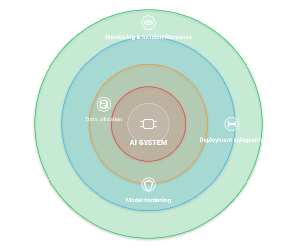</p> Self-driving: cameras + radars, multiple independent AI models, simulation before deployment. <!-- .element: class="fragment" data-fragment-index="1" --> --- ### MLSecOps / AI SafetyOps (Making Safety Repeatable) Safety is not a one-time checklist — it’s a pipeline: - Versioned **data** and **models** <!-- .element: class="fragment" data-fragment-index="1" --> - Automated evaluation gates (before release) <!-- .element: class="fragment" data-fragment-index="2" --> - Secure artifacts and supply chain controls <!-- .element: class="fragment" data-fragment-index="3" --> - Monitoring + incident response (after release) <!-- .element: class="fragment" data-fragment-index="4" --> Note: This is the operational side of defense-in-depth. Good references: NIST AI RMF (Govern/Map/Measure/Manage) + OWASP LLM Top 10 for app risks. --- ### Data Lineage & Governance - Dataset versioning (what changed, when, and why?) <!-- .element: class="fragment" data-fragment-index="1" --> - Provenance: source, licensing, and consent (especially for web-scale data) <!-- .element: class="fragment" data-fragment-index="2" --> - Labeling guidelines + audits (reduce silent label noise) <!-- .element: class="fragment" data-fragment-index="3" --> - Access control + checksums (tamper-evidence) <!-- .element: class="fragment" data-fragment-index="4" --> --- ### Model Registry & Artifact Security - Treat models as **code artifacts** (they can carry malware or backdoors) <!-- .element: class="fragment" data-fragment-index="1" --> - Prefer safe formats (e.g., **safetensors** vs unsafe pickle) <!-- .element: class="fragment" data-fragment-index="2" --> - Sign + hash models; track SBOM-like metadata for ML assets <!-- .element: class="fragment" data-fragment-index="3" --> - Scan third-party models before use; sandbox model loading <!-- .element: class="fragment" data-fragment-index="4" --> --- ### Evaluation Gates (Pre-Deployment) - Accuracy is necessary but not sufficient — test the **tail** and the **worst case** <!-- .element: class="fragment" data-fragment-index="1" --> - Robustness: adversarial, corruption, OOD, sensor stress tests <!-- .element: class="fragment" data-fragment-index="2" --> - Privacy: membership inference / inversion risk checks <!-- .element: class="fragment" data-fragment-index="3" --> - Safety: scenario simulation + red-team playbooks <!-- .element: class="fragment" data-fragment-index="4" --> --- ### Deployment Controls (Reduce Blast Radius) - Canary releases + staged rollout <!-- .element: class="fragment" data-fragment-index="1" --> - Fast rollback (model registry + pinned dependencies) <!-- .element: class="fragment" data-fragment-index="2" --> - Rate limits and abuse detection (prevents extraction / DoS) <!-- .element: class="fragment" data-fragment-index="3" --> - Human override / safe-state fallbacks in safety-critical systems <!-- .element: class="fragment" data-fragment-index="4" --> --- ### Monitoring (Post-Deployment) - Data drift + concept drift detection <!-- .element: class="fragment" data-fragment-index="1" --> - Safety KPIs: near-misses, disengagements, false braking events <!-- .element: class="fragment" data-fragment-index="2" --> - Security KPIs: prompt injection attempts, tool-abuse signals, anomalous query patterns <!-- .element: class="fragment" data-fragment-index="3" --> --- ### Incident Response for AI Systems - Detect → contain → eradicate → recover (classic IR) <!-- .element: class="fragment" data-fragment-index="1" --> - Preserve evidence (logs, model versions, prompts, retrieved docs) <!-- .element: class="fragment" data-fragment-index="2" --> - Patch: data filters, tool isolation, model updates, policy changes <!-- .element: class="fragment" data-fragment-index="3" --> - Postmortems + regression tests so the same failure can’t recur silently <!-- .element: class="fragment" data-fragment-index="4" --> --- ### How to Improve Safety of AIs - <!-- .element: class="fragment" data-fragment-index="1" --> If it's possible use explainable AI models <span class="fragment" data-fragment-index="2">(spoiler: often not possible).</span> - <!-- .element: class="fragment" data-fragment-index="3" --> Use at least 2 <u>totally different</u> AI models in safety critical applications. - Different data used to train them, different model architectures, different outputs, etc. <!-- .element: class="fragment" data-fragment-index="4" --> - Validate the output of each of them with one another. <!-- .element: class="fragment" data-fragment-index="5" --> - Simulate before deploying. <!-- .element: class="fragment" data-fragment-index="6" --> - Use simulations or simulated data to test the behavior of the model, especially in corner cases. <!-- .element: class="fragment" data-fragment-index="7" --> - If possible use human actions/decisions to calibrate the model. <!-- .element: class="fragment" data-fragment-index="8" --> - Use adversarial models to find out flaws, biases and backdoors in the model. <!-- .element: class="fragment" data-fragment-index="9" --> Note: 2 models -> example amba-aur simulation -> self driving car system active but without control, to check with the driver decision real time. --- ### Adversarial Training - Train models **with** adversarial examples to build robustness. <!-- .element: class="fragment" data-fragment-index="1" --> - **Randomized smoothing**: certified robustness with provable guarantees. <!-- .element: class="fragment" data-fragment-index="2" --> - Trade-off: computational cost vs. guaranteed robustness. <!-- .element: class="fragment" data-fragment-index="3" --> - Self-driving: train stop-sign detectors with adversarially perturbed signs to resist sticker attacks. <!-- .element: class="fragment" data-fragment-index="4" --> [ICML 2025](https://proceedings.mlr.press/v267/xin25a.html) <!-- .element: class="smaller" --> --- ### Differential Privacy - Add **calibrated noise** to protect individual data points during training. <!-- .element: class="fragment" data-fragment-index="1" --> - **DP-SGD**: differentially private stochastic gradient descent. <!-- .element: class="fragment" data-fragment-index="2" --> - Trade-off: privacy vs. model accuracy. <!-- .element: class="fragment" data-fragment-index="3" --> - Self-driving: fleet learning where vehicles share model updates **without** exposing individual driving routes or passenger data. <!-- .element: class="fragment" data-fragment-index="4" --> [DP-FedSecure](https://link.springer.com/article/10.1007/s10994-025-06888-w) <!-- .element: class="smaller" --> --- ### Sensor Redundancy and Fusion - Use **multiple totally different** sensor types: camera, radar, LiDAR, ultrasonics. <!-- .element: class="fragment" data-fragment-index="1" --> - Cross-validation between sensors. <!-- .element: class="fragment" data-fragment-index="2" --> - Camera sees phantom object but radar doesn't → system can reason about it. <!-- .element: class="fragment" data-fragment-index="3" --> - Analogy to the "2 different AI models" principle applied to hardware. <!-- .element: class="fragment" data-fragment-index="4" --> --- ### AI Red Teaming - **NIST AI RMF** framework: red-teaming as organizational governance requirement. <!-- .element: class="fragment" data-fragment-index="1" --> - Diverse teams: technical AI security + domain expertise + ethical perspectives. <!-- .element: class="fragment" data-fragment-index="2" --> - **Continuous** testing, not one-shot. Must evolve as attacks evolve. <!-- .element: class="fragment" data-fragment-index="3" --> - Self-driving: red-team ADS by simulating adversarial conditions (sun glare, heavy rain, unusual pedestrian behavior). <!-- .element: class="fragment" data-fragment-index="4" --> [NIST CAISI](https://www.nist.gov/blogs/caisi-research-blog/insights-ai-agent-security-large-scale-red-teaming-competition) <!-- .element: class="smaller" --> --- ### AI Alignment - The alignment problem: ensuring AI systems pursue **intended** goals. <!-- .element: class="fragment" data-fragment-index="1" --> - **RLHF** (Reinforcement Learning from Human Feedback): trains reward models on human preferences. <!-- .element: class="fragment" data-fragment-index="2" --> - **Constitutional AI**: AI self-critique against explicit ethical principles. <!-- .element: class="fragment" data-fragment-index="3" --> - Limitations: can optimize for approval rather than safety, may encode human biases. <!-- .element: class="fragment" data-fragment-index="4" --> - Self-driving: aligning objective function -- minimize travel time vs. maximize safety vs. passenger comfort. <!-- .element: class="fragment" data-fragment-index="5" --> <p>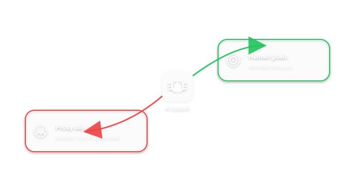</p> [Anthropic's Constitutional AI](https://mbrenndoerfer.com/writing/constitutional-ai-principles-critique-revision-cai-training) <!-- .element: class="smaller" --> --- ### Model Watermarking - Protect IP and detect AI-generated content. <!-- .element: class="fragment" data-fragment-index="1" --> - **InvisMark**: invisible watermarks for AI images, 97% bit accuracy under distortions. <!-- .element: class="fragment" data-fragment-index="2" --> - **LLM watermarks**: embed signatures in model's latent space. <!-- .element: class="fragment" data-fragment-index="3" --> - Self-driving: watermark ADS models to detect unauthorized copying or tampering. <!-- .element: class="fragment" data-fragment-index="4" --> [InvisMark, WACV 2025](https://openaccess.thecvf.com/content/WACV2025/papers/Xu_InvisMark_Invisible_and_Robust_Watermarking_for_AI-Generated_Image_Provenance_WACV_2025_paper.pdf) <!-- .element: class="smaller" --> --- <!-- ============================================================ --> <!-- SECTION 9: ISO/PAS 8800 --> <!-- ============================================================ --> ### How to Improve Safety of AIs - ISO/PAS 8800 - Standard ISO that regulates "Road vehicles — Safety and Artificial Intelligence". <!-- .element: class="fragment" data-fragment-index="1" --> - Published in Dec. 2024. <!-- .element: class="fragment" data-fragment-index="2" --> - Covers all the use of AI in road vehicles, from driving assistant technologies to ADS (another ISO standard is currently under publication for ADS only). <!-- .element: class="fragment" data-fragment-index="3" --> - Many concepts can be applied 1:1 to any safety critical domain. <!-- .element: class="fragment" data-fragment-index="4" --> - Full of references to other normatives/ISO standards, from SW/HW testing to IT infrastructure and cybersecurity. <!-- .element: class="fragment" data-fragment-index="5" --> - No mention of possible attacks to AI models. <!-- .element: class="fragment" data-fragment-index="6" --> --- ### Standards: How They Fit Together (Road Vehicles) - **ISO/PAS 8800**: AI safety assurance for road vehicles (AI-specific) <!-- .element: class="fragment" data-fragment-index="1" --> - **ISO 26262**: functional safety (accidental faults) <!-- .element: class="fragment" data-fragment-index="2" --> - **ISO/SAE 21434 + UNECE R155**: cybersecurity engineering + CSMS (intentional attackers) <!-- .element: class="fragment" data-fragment-index="3" --> - **UNECE R156**: software updates + SUMS (safe update process) <!-- .element: class="fragment" data-fragment-index="4" --> Note: AI safety intersects functional safety + cybersecurity. If you only do “AI safety”, you may still ship an unsafe system. --- ### ISO 26262 (Functional Safety) - Focus: hazards from **malfunctioning behavior** (random HW faults + systematic SW faults) <!-- .element: class="fragment" data-fragment-index="1" --> - Key practice: HARA (Hazard Analysis and Risk Assessment) + safety lifecycle <!-- .element: class="fragment" data-fragment-index="2" --> - Self-driving: safe-state behavior and fault-tolerant architectures matter as much as perception accuracy <!-- .element: class="fragment" data-fragment-index="3" --> [ISO 26262-2:2018 (ISO page)](http://committee.iso.org/standard/68384.html) <!-- .element: class="smaller" --> --- ### ISO/SAE 21434 + UNECE R155 (Cybersecurity) - Focus: hazards from **intentional** attacks (TARA, threat actors, attack paths) <!-- .element: class="fragment" data-fragment-index="1" --> - UNECE R155 makes a **CSMS** a type-approval requirement in many markets <!-- .element: class="fragment" data-fragment-index="2" --> - AI safety link: ML supply chain, prompt injection, and sensor spoofing are cybersecurity problems too <!-- .element: class="fragment" data-fragment-index="3" --> [ISO/SAE 21434:2021 (ISO page)](http://iso.org/standard/70918.html?browse=ics) · [UNECE R155](https://unece.org/transport/documents/2021/03/standards/un-regulation-no-155-cyber-security-and-cyber-security) <!-- .element: class="smaller" --> --- ### UNECE R156 (Software Updates) - Requires a **SUMS** (Software Update Management System) <!-- .element: class="fragment" data-fragment-index="1" --> - Updates can change safety behavior — you need traceability, testing, and safe rollback <!-- .element: class="fragment" data-fragment-index="2" --> - AI safety link: model updates are software updates (with extra uncertainty) <!-- .element: class="fragment" data-fragment-index="3" --> [UNECE R156](https://unece.org/transport/documents/2021/03/standards/un-regulation-no-156-software-update-and-software-update) <!-- .element: class="smaller" --> --- ### Practical Takeaway (for AI Engineers) - **Safety**: test worst-case scenarios, not only averages <!-- .element: class="fragment" data-fragment-index="1" --> - **Security**: assume adversaries, protect the ML supply chain, and monitor for abuse <!-- .element: class="fragment" data-fragment-index="2" --> - **Operations**: updates need controlled rollout + rollback (treat models like software) <!-- .element: class="fragment" data-fragment-index="3" --> --- <!-- .slide: data-auto-animate class="text-xs" --> ### ISO/PAS 8800 - <!-- .element: class="fragment" data-fragment-index="1" --> Based on the production of a huge amount of documentation, following the principle: <i>if I'm forced to think about safety, the final system will be safer</i>. - AI safety requirements. <!-- .element: class="fragment" data-fragment-index="2" --> - Input space definition. <!-- .element: class="fragment" data-fragment-index="3" --> - Known insufficiencies of the AI system and third parties SW used. <!-- .element: class="fragment" data-fragment-index="4" --> - AI component or AI system architecture. <!-- .element: class="fragment" data-fragment-index="5" --> - Data and data collection design specification. <!-- .element: class="fragment" data-fragment-index="6" --> - Dataset requirements and design specifications. <!-- .element: class="fragment" data-fragment-index="7" --> - Dataset verification and validation reports. <!-- .element: class="fragment" data-fragment-index="8" --> - Dataset safety analysis report. <!-- .element: class="fragment" data-fragment-index="9" --> - AI system verification and validation reports. <!-- .element: class="fragment" data-fragment-index="10" --> - AI system safety analysis report. <!-- .element: class="fragment" data-fragment-index="11" --> - ... <!-- .element: class="fragment" data-fragment-index="12" --> --- <!-- .slide: data-auto-animate class="text-xs" --> ### ISO/PAS 8800 - <u>AI safety requirements.</u> - Input space definition. - <u>Known insufficiencies of the AI system and third parties SW used.</u> - AI component or AI system architecture. - <u>Data and data collection design specification.</u> - Dataset requirements and design specifications. - Dataset verification and validation reports. - <u>Dataset safety analysis report.</u> - AI system verification and validation reports. - <u>AI system safety analysis report.</u> - <!-- .element: class="fragment" data-fragment-index="1" --> <b>Re-evaluate and change for all the lifecycle of the system</b> --- ### ISO/PAS 8800 - For being certified ISO/PAS 8800 compliant need to satisfy all the safety requirements (or at least have a strong justification if some requirement is not satisfied). <!-- .element: class="fragment" data-fragment-index="1" --> - But same guidelines may greatly improve all the AI ecosystem! <!-- .element: class="fragment" data-fragment-index="2" --> - There is no shame in a (possibly) unsafe AI system! <!-- .element: class="fragment" data-fragment-index="3" --> - <!-- .element: class="fragment" data-fragment-index="4" --> Just attach all the documentation and <u>clearly state</u> how the system may fail and in which occasions. - Also include untested scenarios (e.g. I only tested my ADS in right-hand drive countries). <!-- .element: class="fragment" data-fragment-index="5" --> - Minimize the risk of misuse of AI systems by third parties. <!-- .element: class="fragment" data-fragment-index="6" --> - Will you use an online AI model to evaluate CVs if it is clearly stated that it may contain biases against women, blacks, minorities, etc.? <!-- .element: class="fragment" data-fragment-index="7" --> --- <!-- ============================================================ --> <!-- SECTION 10: BONUS - DEMOCRATIZATION + CLIMATE --> <!-- ============================================================ --> <section> ## Bonus: AI Democratization </section> <section> ### Who owns AI? - AI needs (a big) infrastructure: <!-- .element: class="fragment" data-fragment-index="1" --> - The algorithm is just a small part of the product. <!-- .element: class="fragment" data-fragment-index="2" --> - Computational capabilities (computational power and memory) are fundamental. <!-- .element: class="fragment" data-fragment-index="3" --> - Only the biggest companies have the workforce to maintain a solid infrastructure. <!-- .element: class="fragment" data-fragment-index="4" --> - Substantial advantage over smaller companies or academia. <!-- .element: class="fragment" data-fragment-index="5" --> </section> <section> ### Who owns AI? - AI needs (a lot of) data: - Data is essential to reproduce results. <!-- .element: class="fragment" data-fragment-index="1" --> - Data is often more important than algorithm (who owns data?). <!-- .element: class="fragment" data-fragment-index="2" --> - Big tech companies have the possibility to own or acquire a huge amount of data. <!-- .element: class="fragment" data-fragment-index="3" --> - Substantial advantage over smaller companies or academia. <!-- .element: class="fragment" data-fragment-index="4" --> </section> <section> ### The myth of AI Democratization - AI big companies claim to be democratic: - Sharing their research (e.g. arXiv). <!-- .element: class="fragment" data-fragment-index="1" --> - Sharing their code (e.g. github). <!-- .element: class="fragment" data-fragment-index="2" --> - Sharing their frameworks (e.g. Tensorflow). <!-- .element: class="fragment" data-fragment-index="3" --> - Offering limited access to compute (e.g. Colab). <!-- .element: class="fragment" data-fragment-index="4" --> > <!-- .element: class="fragment" data-fragment-index="5" --> [...] at an increasing scale, consumers have greater access to use and purchase technologically sophisticated products, <span style="color:#44AFF6">as well as to participate meaningfully in the development of these products. </section> <section> ### The myth of AI Democratization <div class="callout activity"> <span class="tag">Discussion</span><span class="time">60s</span> <p class="mini"><b>Policy + access:</b> Who gets a seat at the table when AI policy is drafted?</p> <ul class="mini"> <li>Big labs vs startups vs academia vs civil society</li> <li>What incentives shape “voluntary” commitments?</li> </ul> </div> <span class="smaller">White House meeting on the threat of AI (May 2023)</span> </section> <section> <div class="callout quiz"> <span class="tag">Quiz</span><span class="time">45s</span> <p class="mini">“Democratization” of AI mostly fails because…</p> <ul class="mini"> <li>A) algorithms are secret</li> <li>B) compute + data + distribution are concentrated</li> <li>C) papers are not published</li> </ul> <p class="fragment mini"><b>Answer:</b> B.</p> </div> <p class="muted mini">Press discussion examples referenced here (May 2023): The Guardian, The Verge.</p> </section> <section> ### The myth of AI Democratization - AI is currently owned by few companies - They have access to a huge amount of data. <!-- .element: class="fragment" data-fragment-index="1" --> - They attract top AI scientists (huge salaries, freedom). <!-- .element: class="fragment" data-fragment-index="2" --> - They have the power to transform research ideas into products. <!-- .element: class="fragment" data-fragment-index="3" --> </section> <section> ### Why a democratic AI is important - Avoid monopolies. <!-- .element: class="fragment" data-fragment-index="1" --> - <!-- .element: class="fragment" data-fragment-index="2" --> Democratization means that everyone gets the <span style="color:#44AFF6">opportunities and benefits of artificial intelligence.</span> - Openness in AI development is proved to be beneficial to the development of better technologies. <!-- .element: class="fragment" data-fragment-index="3" --> </section> <section> ### AI ownership - Who owns the outputs produced by genAI? Are outputs of AI models copyrightable? <!-- .element: class="fragment" data-fragment-index="1" --> <div class="callout activity fragment" data-fragment-index="2"> <span class="tag">Prompt</span><span class="time">60s</span> <p class="mini">If an AI image is trained on copyrighted art, what should count as “derivative”?</p> <p class="muted mini">Tie-in: licensing vs “train now, settle later”.</p> </div> - What about code? <!-- .element: class="fragment" data-fragment-index="3" --> - What kind of license applies to ChatGPT-generated code is still not clear. <!-- .element: class="fragment" data-fragment-index="4" --> - Legally, the implications of using ChatGPT-generated code in commercial products are still evolving. <!-- .element: class="fragment" data-fragment-index="5" --> </section> --- <section> ## Bonus: AI and Climate Change </section> <section> ### Climate change - What is the carbon footprint of training a large AI model? - <!-- .element: class="fragment" data-fragment-index="1" --> A <a href="https://arxiv.org/pdf/2104.10350">2021 paper</a> from Google estimates that a single training of GPT-3 emits ~552,000kg of CO$_2$. - GPT-4 is estimated to be more than 4x the size of GPT-3. <!-- .element: class="fragment" data-fragment-index="2" --> - We take into account HW improvement, so a 2x multiplier is applied → ~1,104,000kg of CO$_2$. <!-- .element: class="fragment" data-fragment-index="3" --> - GPT-4 is trained for more than 100 days, while GPT-3 only for 14 days, so another 7x multiplier is applied → 7,728,000kg of CO$_2$. <!-- .element: class="fragment" data-fragment-index="4" --> </section> <section> ### Climate change - But this is only one single training! - Let's assume at least 100 explorative training averaging 0.2x the last one. <!-- .element: class="fragment" data-fragment-index="1" --> - 7,728,000 + (7,728,000 $\cdot$ 0.2 $\cdot$ 100) = 162,288,000kg of CO$_2$. <!-- .element: class="fragment" data-fragment-index="2" --> - And what about deployment? <!-- .element: class="fragment" data-fragment-index="3" --> - Back-of-envelope assumption (illustrative, not a verified OpenAI number): 30,000 A100-class GPUs at ~300W each (≈9 MW). <!-- .element: class="fragment" data-fragment-index="4" --> - <!-- .element: class="fragment" data-fragment-index="5" --> Suppose 70% average utilization for one year → 55,188,000kWh of energy, equal to 21,718,000kg of CO$_2$ emission (<a href="https://www.epa.gov/energy/greenhouse-gas-equivalencies-calculator">source</a>). - Total = 184,006,000kg of emitted CO$_2$. <!-- .element: class="fragment" data-fragment-index="6" --> Note: The GPU power number varies by accelerator and form factor (e.g., A100 PCIe vs SXM), and real-world inference also depends on utilization, batching, PUE, and energy mix. Reference: [NVIDIA A100](https://www.nvidia.com/en-us/data-center/a100/) </section> <section> ### Climate change - To make that into perspective: 184,006,000kg of CO<sub>2</sub> emission are the same as: - 42,920 gasoline-powered passenger vehicles driven for one year. <!-- .element: class="fragment" data-fragment-index="1" --> - 162,505 electric-powered passenger vehicles driven for one year. <!-- .element: class="fragment" data-fragment-index="2" --> - 92,712,741kg of coal burned. <!-- .element: class="fragment" data-fragment-index="3" --> - 38,346 homes' electricity use for one year. <!-- .element: class="fragment" data-fragment-index="4" --> - 55 wind turbines running for a year. <!-- .element: class="fragment" data-fragment-index="5" --> - Carbon sequestered from 747km$^2$ of US forests. <!-- .element: class="fragment" data-fragment-index="6" --> </section> <section> ### Climate change <div class="callout takeaway"> <span class="tag">Takeaway</span> <p class="mini">Carbon impact is a full lifecycle problem (hardware, training, deployment, logistics, facilities, data).</p> <p class="muted mini">Use the references in the appendix for deeper numbers; avoid false precision in live talks.</p> </div> </section> <section> ### Climate change - But here we only calculated training and deployment stages, the full carbon emission of a ML model is composed of [all these phases](https://www.sciencedirect.com/science/article/pii/S2095809924002315): - ML R&D <!-- .element: class="fragment" data-fragment-index="1" --> - Hardware manufacturing (material extraction?) <!-- .element: class="fragment" data-fragment-index="2" --> - Global commercial logistics <!-- .element: class="fragment" data-fragment-index="3" --> - Facility O&M <!-- .element: class="fragment" data-fragment-index="4" --> - Massive data collection and management <!-- .element: class="fragment" data-fragment-index="5" --> - Model training and fine-tuning <!-- .element: class="fragment" data-fragment-index="6" --> - Deployment stage <!-- .element: class="fragment" data-fragment-index="7" --> - Material recycling and waste disposal <!-- .element: class="fragment" data-fragment-index="8" --> </section> <section> ### Climate change - But AI and ML are (fortunately) far from being a leading cause for climate change - <!-- .element: class="fragment" data-fragment-index="1" --> In a month commercial airplanes emit at least 65x10$^9$kg of CO$_2$ (<a href="https://ourworldindata.org/grapher/monthly-co2-emissions-from-international-and-domestic-flights?time=2022-10-15..latest">source</a>). - Many companies claims to use high percentages of renewable energy for their data centers. <!-- .element: class="fragment" data-fragment-index="2" --> - But... <!-- .element: class="fragment" data-fragment-index="3" --> <div class="callout activity fragment" data-fragment-index="4"> <span class="tag">Discussion</span><span class="time">45s</span> <p class="mini">Why can “% renewable” claims be misleading?</p> <p class="muted mini">Think: location/time matching, offsets, marginal generation, and grid mix.</p> </div> [The growing energy footprint of artificial intelligence](https://www.cell.com/joule/abstract/S2542-4351(23)00365-3) <!-- .element: class="fragment smaller" data-fragment-index="4" --> </section> <section> ### Climate change <div class="callout quiz"> <span class="tag">Quiz</span><span class="time">45s</span> <p class="mini">Which matters most for deployment energy?</p> <ul class="mini"> <li>A) model size only</li> <li>B) utilization + batching + PUE + energy mix</li> <li>C) the programming language</li> </ul> <p class="fragment mini"><b>Answer:</b> B.</p> </div> </section> --- <!-- ============================================================ --> <!-- SECTION 11: SUMMARY + CLOSING --> <!-- ============================================================ --> <!-- .slide: data-transition="slide-in fade-out" --> ### To summarize - The widespread adoption of AI in high risk applications poses significant safety risks. <!-- .element: class="fragment" data-fragment-index="1" --> - Regulations exist (EU AI Act) but enforcement is weak and Big Tech lobbies to weaken them. <!-- .element: class="fragment" data-fragment-index="2" --> - AI models may (and will) have unexpected bad outcomes. <!-- .element: class="fragment" data-fragment-index="3" --> - Bias on the data/model is a major enemy. <!-- .element: class="fragment" data-fragment-index="4" --> - It is often impossible to predict a priori all the possible bad outcomes. <!-- .element: class="fragment" data-fragment-index="5" --> - Malicious individuals may (and will) attack AI models and the data they are trained on. <!-- .element: class="fragment" data-fragment-index="6" --> - From adversarial examples to supply chain attacks to prompt injection. <!-- .element: class="fragment" data-fragment-index="7" --> - Defenses exist: adversarial training, differential privacy, red teaming, alignment, ISO standards. <!-- .element: class="fragment" data-fragment-index="8" --> --- ### Final checkpoint (2 min) <div class="callout activity"> <span class="tag">Pair debrief</span><span class="time">90s</span> <p class="mini"><b>Pick one attack + one defense</b> from today and map it onto the self-driving stack.</p> <ul class="mini"> <li>Where does it hit (data, model, deployment, humans)?</li> <li>What evidence would you collect after an incident?</li> </ul> </div> <div class="callout takeaway" style="margin-top:0.6em"> <span class="tag">Takeaway</span> <p class="mini">AI safety = incentives + engineering + security + operations. No single control is enough.</p> </div> --- <!-- .slide: data-auto-animate --> ### My personal advice - Always think about the possible safety problems of your AI system. <!-- .element: class="fragment" data-fragment-index="1" --> - From data acquisition to deployment (and beyond!). <!-- .element: class="fragment" data-fragment-index="2" --> - Invest time analyzing training data, how and who acquired it, how it is stored, possible biases, ... <!-- .element: class="fragment" data-fragment-index="3" --> - Do not fall for easy and fast enthusiasm: the possible bad outcomes are often hidden and difficult to spot. <!-- .element: class="fragment" data-fragment-index="4" --> - On the other hand, try to not become resistant, anti, or too critical of AI. <!-- .element: class="fragment" data-fragment-index="5" --> - And always remember that: <!-- .element: class="fragment" data-fragment-index="6" --> __AIs are f*****g LAZY!__ <!-- .element: class="fragment" data-fragment-index="7" --> Note: example of 2023 summer conference Bertinoro --- <!-- .slide: data-auto-animate data-background-color="red" --> AIs are f*****g LAZY! <!-- .element: class="bigger" --> Note: AI only see what we give to it. Stop saying that AI is like a child, AI is not something of this world, it doesn't understand anything apart from optimizing the metric we give to it. --- <!-- .slide: data-auto-animate --> ### Thanks <div class="callout poll"> <span class="tag">Exit ticket</span><span class="time">30s</span> <p class="mini">One sentence: what is the <b>most actionable</b> thing you’ll do differently after this seminar?</p> </div> --- <!-- .slide: data-auto-animate --> ### Open Q&A (as long as you want) <div class="callout activity"> <span class="tag">Q&A prompts</span> <ul class="mini"> <li>Which attack feels most realistic in your domain?</li> <li>Which defense is most “deployable” next week?</li> <li>Where do you draw the line between safety and security?</li> </ul> </div> --- <!-- ============================================================ --> <!-- APPENDIX: REFERENCES --> <!-- ============================================================ --> ## Appendix: References - Grouped by section for quick lookup. - Prefer primary sources (regulators, standards bodies, major orgs), then peer-reviewed papers. - Many slides also include inline citations; this appendix collects them in one place. --- <!-- .slide: class="text-xs" --> ### References — Regulation & Governance - [European Commission: AI Act enters into force (2024-08-01)](https://commission.europa.eu/news-and-media/news/ai-act-enters-force-2024-08-01_en) - [EUR-Lex: Regulation (EU) 2024/1689 (AI Act)](https://eur-lex.europa.eu/eli/reg/2024/1689/oj/eng) - [EU AI Act Service Desk: Implementation timeline](https://ai-act-service-desk.ec.europa.eu/en/ai-act/eu-ai-act-implementation-timeline) - [EU AI Act Service Desk: Annex III (high-risk list)](https://ai-act-service-desk.ec.europa.eu/en/ai-act/annex-3) - [NIST: AI RMF 1.0 (NIST.AI.100-1)](https://www.nist.gov/publications/artificial-intelligence-risk-management-framework-ai-rmf-10) - [NIST: Adversarial Machine Learning taxonomy (AI 100-2, E2025)](https://csrc.nist.gov/pubs/ai/100/2/e2025/final) - [OWASP: Top 10 for LLM Applications (2025)](https://genai.owasp.org/resource/owasp-top-10-for-llm-applications-2025/) - [OWASP: Prompt Injection Prevention Cheat Sheet](https://cheatsheetseries.owasp.org/cheatsheets/LLM_Prompt_Injection_Prevention_Cheat_Sheet.html) --- <!-- .slide: class="text-xs" --> ### References — Politics, Enforcement, and Economics - [Proton: Big Tech fines tracker (2024 totals)](https://proton.me/blog/big-tech-pays-fines-under-3-weeks) - [Dutch DPA: Clearview AI fine (illegal facial recognition data collection)](https://www.autoriteitpersoonsgegevens.nl/en/current/dutch-dpa-imposes-a-fine-on-clearview-because-of-illegal-data-collection-for-facial-recognition) - [Noyb: Criminal complaint against Clearview AI](https://noyb.eu/en/criminal-complaint-against-facial-recognition-company-clearview-ai) - [Corporate Europe Observatory: pressure on EU advanced AI rules (2025)](https://corporateeurope.org/en/2025/04/eu-under-heavy-big-tech-pressure-weaken-rules-advanced-ai) - [Axios: Meta tops Big Tech lobbying spend (Q4 2025)](https://www.axios.com/2026/01/21/meta-big-tech-lobbying-spending-q4) - [Tortoise Media: UK revolving door concerns (2025)](https://www.tortoisemedia.com/2025/04/03/public-officials-joining-tech-firms-raise-fears-of-unregulated-revolving-door) - [Reuters: Cruise failures and NHTSA withholding case study (2024)](https://www.reuters.com/business/autos-transportation/how-gms-cruise-robotaxi-tech-failures-led-it-drag-pedestrian-20-feet-2024-01-26/) - [Bloomberg Law: Anthropic $1.5B copyright settlement](https://news.bloomberglaw.com/class-action/record-1-5-billion-ai-copyright-pact-sets-bar-for-openai-meta) - [HKS Student Policy Review: compliance costs vs startups](https://studentreview.hks.harvard.edu/why-compliance-costs-of-ai-commercialization-maybe-holding-start-ups-back/) - [Lawfare: “1,000 AI bills” and preemption debate](http://www.lawfareblog.com/article/1-000-ai-bills--time-for-congress-to-get-serious-about-preemption) - [FBI IC3: 2024 Internet Crime Report (PDF)](https://www.ic3.gov/AnnualReport/Reports/2024_IC3Report.pdf) - [GASA + Feedzai: Global State of Scams Report 2024 (~$1T)](https://www.gasa.org/post/global-state-of-scams-report-2024-1-trillion-stolen-in-12-months-gasa-feedzai) - [IC3 PSA (2025-05-15): senior US officials impersonated](https://www.ic3.gov/PSA/2025/PSA250515) --- <!-- .slide: class="text-xs" --> ### References — Bias & Fairness - [King's College London: pedestrian detection bias (children, darker skin)](https://www.kcl.ac.uk/news/driverless-cars-worse-at-detecting-children-and-darker-skinned-pedestrians-say-scientists) - [Kleinberg et al.: Inherent trade-offs in fairness (arXiv:1609.05807)](https://arxiv.org/pdf/1609.05807) - [Hardt et al.: Equality of Opportunity in Supervised Learning (NeurIPS 2016)](https://proceedings.neurips.cc/paper_files/paper/2016/file/9d2682367c3935defcb1f9e247a97c0d-Paper.pdf) --- <!-- .slide: class="text-xs" --> ### References — Evasion (Adversarial Examples) & Sensor Spoofing - [Goodfellow et al. (FGSM), arXiv:1412.6572](https://arxiv.org/abs/1412.6572) - [Athalye et al. (Obfuscated Gradients), ICML 2018](https://proceedings.mlr.press/v80/athalye18a/athalye18a.pdf) - [Eykholt et al.: Robust physical-world attacks (traffic signs)](https://iotsecurity.engin.umich.edu/robust-physical-world-attacks-on-deep-learning-visual-classification/) - [Universal adversarial stickers (2025), arXiv HTML](https://arxiv.org/html/2502.18724v1) - [AdvReal (YOLO physical patch, 2025), arXiv:2505.16402](https://arxiv.org/abs/2505.16402) - [D-SLAMSpoof (LiDAR SLAM spoofing, 2026), arXiv:2603.11365v1](https://arxiv.org/abs/2603.11365v1) - [USENIX Security 2025: Shadow Hack (LiDAR)](https://www.usenix.org/system/files/usenixsecurity25-kobayashi.pdf) - [Slow-drift GPS spoofing (arXiv:2401.01394)](https://arxiv.org/abs/2401.01394) - [GPS-IDS (arXiv HTML:2405.08359v2)](https://arxiv.org/html/2405.08359v2) --- <!-- .slide: class="text-xs" --> ### References — Poisoning, Backdoors, Supply Chain, Federated Privacy - [Nightshade (poisoning T2I models), arXiv:2310.13828](https://arxiv.org/pdf/2310.13828.pdf) - [Nightshade project (University of Chicago)](https://nightshade.cs.uchicago.edu/) - [Bagdasaryan et al.: backdooring federated learning (PMLR 2020)](https://proceedings.mlr.press/v108/bagdasaryan20a.html) - [Hidden Trigger Backdoors (arXiv:1910.00033)](https://arxiv.org/pdf/1910.00033) - [LOTUS backdoors (arXiv:2403.17188)](https://arxiv.org/pdf/2403.17188) - [PointBA (LiDAR point cloud backdoor), arXiv:2103.16074](https://arxiv.org/pdf/2103.16074) - [ReversingLabs: malware in ML models on Hugging Face](https://reversinglabs.com/blog/rl-identifies-malware-ml-model-hosted-on-hugging-face) - [FedLeak (gradient leakage, 2025), arXiv:2506.08435](https://arxiv.org/abs/2506.08435) --- <!-- .slide: class="text-xs" --> ### References — Model Attacks (Extraction, Inversion) & LLM Security - [Praetorian: practical model extraction attacks](https://www.praetorian.com/blog/stealing-ai-models-through-the-api-a-practical-model-extraction-attack/) - [TaskMaster (ADS localization extraction)](https://qifan-sailboat.github.io/publication/acsac22/) - [Carlini et al. (model extraction / privacy), PMLR 2024](https://proceedings.mlr.press/v235/carlini24a.html) - [P2I (model inversion via StyleGAN), arXiv:2407.08127](https://arxiv.org/abs/2407.08127) - [MEDUSA (medical inversion), PMLR 2025](https://proceedings.mlr.press/v258/azhar25a.html) - [OWASP: Top 10 for LLM Apps (2025)](https://genai.owasp.org/resource/owasp-top-10-for-llm-applications-2025/) --- <!-- .slide: class="text-xs" --> ### References — Hallucinations & Mitigations - [HALoGEN (hallucinations benchmark), ACL 2025](https://aclanthology.org/2025.acl-long.71/) - [Survey on hallucination mitigation (arXiv:2510.24476)](https://arxiv.org/abs/2510.24476) - [Reuters: Tesla Autopilot crash lawsuit context (2025)](https://www.reuters.com/legal/litigation/tesla-fails-end-florida-lawsuit-over-fatal-model-s-crash-2025-06-27/) --- <!-- .slide: class="text-xs" --> ### References — Defenses, Standards, and Safety Engineering - [ICML 2025: adversarial training / robustness](https://proceedings.mlr.press/v267/xin25a.html) - [DP-FedSecure (2025): differential privacy + federated learning](https://link.springer.com/article/10.1007/s10994-025-06888-w) - [NIST AI RMF 1.0](https://www.nist.gov/publications/artificial-intelligence-risk-management-framework-ai-rmf-10) - [ISO/PAS 8800:2024 (AI safety in road vehicles)](http://committee.iso.org/standard/83303.html) - [ISO 26262-2:2018 (functional safety management)](http://committee.iso.org/standard/68384.html) - [ISO/SAE 21434:2021 (automotive cybersecurity engineering)](http://iso.org/standard/70918.html?browse=ics) - [UNECE R155 (CSMS)](https://unece.org/transport/documents/2021/03/standards/un-regulation-no-155-cyber-security-and-cyber-security) - [UNECE R156 (SUMS)](https://unece.org/transport/documents/2021/03/standards/un-regulation-no-156-software-update-and-software-update) - [WHO: Road traffic injuries facts](https://www.who.int/news-room/fact-sheets/detail/road-traffic-injuries) --- <!-- .slide: class="text-xs" --> ### References — Climate / Energy Footprint - [Patterson et al. (2021): carbon emissions of large neural network training, arXiv:2104.10350](https://arxiv.org/pdf/2104.10350) - [Joule (2023): The growing energy footprint of artificial intelligence](https://www.cell.com/joule/abstract/S2542-4351(23)00365-3) - [EPA: Greenhouse Gas Equivalencies Calculator](https://www.epa.gov/energy/greenhouse-gas-equivalencies-calculator) - [Our World in Data: aviation CO2 emissions](https://ourworldindata.org/grapher/monthly-co2-emissions-from-international-and-domestic-flights?time=2022-10-15..latest) --- <!-- .slide: class="title-slide-lol" --> ## Introduction to AI ~~Ethics~~ Safety Gabriele Graffieti ---- You can find these slides at: <!-- .element: class="smaller grey italic" --> <br> [https://ggraffieti.github.io/slides_aiethics_DL](https://ggraffieti.github.io/slides_aiethics_DL/) Note: Closing slide repeated intentionally so the deck can be navigated cyclically during Q&A.